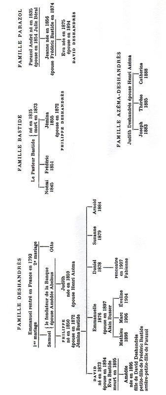

JEANNE GALZY
LA SURPRISE DE VIVRE, III
LA CAVALIÈRE
nrf
GALLIMARD
Généalogie des familles
DESHANDRÈS
BASTIDE
et
PARAZOL

PREMIÈRE PARTIE
Elle se redressa sur le coude et la regarda dormir. La respiration soulevait cet étroit espace qui séparait les seins, un menton ferme s’incrustait dans le rond de l’épaule et le visage était tourné vers l’espace de la chambre à peine éclairée. Encore contre elle par la douceur de sa peau, elle sentait sa vie jumelée à cette autre vie proche.
Elle n’osa pas bouger pour ne pas troubler ce sommeil. Des délices fondaient encore en elle, comme s’il suffisait de leurs jambes mêlées et du parfum sous lequel stagnait l’autre odeur plus profonde. Une odeur amère comme celle des hautes herbes près de l’étang. Et soudain le vent de là-bas lui fut perceptible : un appel la traversa de lumière, d’espace, de course, ses cheveux brandis comme des flammes. Elle échappait au lit, aux draps saccagés, à la tiédeur savoureuse d’un corps encore mêlé au sien.
Mais d’un mouvement de cils elle chassa les images, appuya sa joue à cette épaule offerte, referma les yeux. De fines fougères s’étiraient encore en elle, vibraient avec des battements délicieux, s’écrasaient aux hanches, s’évasaient en gaine : elle pensa aux sirènes, à leur prolongement marin, puis écouta encore près d’elle le souffle un peu rauque du sommeil épuisé, sourit avec une jeune fierté, referma les yeux.
En bas, dans la large avenue roulaient les voitures. Une ville énorme l’enserrait. Lointainement venu, un air plus frais passait par une fenêtre entrouverte. Elle pensa, en la sentant nue, « pourvu qu’elle ne prenne pas froid ! » et fut sans force pour tirer le drap. Après tout, c’était l’été. Cette voix, dont tant de critiques avaient célébré la beauté, ne courait pas de risque.
Elle adhéra un peu plus fort à l’épaule, se sentit s’engourdir, lutta contre le sommeil. Trop d’interrogations la pressaient.
Pourquoi venait-elle d’éprouver ce que nulle autre ne lui avait jamais donné ? Cela venait-il d’elle-même ou de l’autre ?
Elle essayait de se remémorer l’étrange aventure. Cette fois elle n’avait rien appelé, rien décidé. Dans ce Paris inconnu, elle était entrée dans un théâtre. Le spectacle était quelconque ; mais une voix avait chanté. Et elle qui n’avait jamais frémi qu’au bruit du vent ou de la vague, avait été précipitée dans l’enchantement d’un monde ignoré.
Et maintenant la voix demandait :
— Que fais-tu ?
— Je pensais.
Le beau visage vint sur elle. Elle vit dans les yeux lourdement cernés de longs cils, un étonnement.
— Quel âge as-tu ?
— Dix-neuf ans.
L’actrice rit de son rire un peu guttural, se redressa en s’appuyant sur la mince poitrine, regarda l’heure à sa montre-bracelet encerclée de diamants :
— Pas possible ! Dix heures ! Lève-toi vite ! J’aime autant qu’on ne sache pas…
La parole était impérieuse. Amédée sauta du lit comme si elle descendait de cheval, rassembla les vêtements rejetés.
— Dépêche-toi ! tu traverses l’antichambre. Ouvre doucement la porte. Ne fais pas de bruit.
Elle la chassait allègrement. Et Amédée eut la sensation que c’était fini et de cette tiédeur parfumée et de ce corps et de ses caprices et de ses exigences. Elle agrafa sa robe, chercha son sac, embrassa d’un regard l’espace, le tapis, les rideaux épais, la blancheur du lit que tachait de noir une chevelure défaite.
— Élina !
— File vite !
— On se reverra ?
— Bien sûr !
Elle eut envie de revenir, mais se retint tant elle sentit cette volonté qui la repoussait avec hâte. Elle avait déjà la main sur la poignée dorée de la porte.
— Chou, dit la voix, fais doucement.
L’antichambre était prise entre des portes fermées ; mais celle de l’entrée ne faisait aucun doute, elle en poussa le verrou, ne songea pas à appeler l’ascenseur, prit l’escalier dans son élan de fuite et l’incertitude de tout malgré les mots prononcés. Tout s’agitait confusément en elle dans un tourbillon de vertige : la nuit inespérée, l’emprise soudaine, l’image d’un corps accompli et parfait, son asservissement à des mains expertes.
En bas il y eut un bruit. Une porte battit. L’ascenseur montait, huilé, sifflant à peine. Un gros homme pâle la regardait, s’élevant comme vers les cintres d’un théâtre, à travers des reflets de vitres. Et pendant qu’elle était frappée par les plis impeccables de son pantalon, ses souliers de daim, son air de richesse, il lui vint à la pensée : « Mais elle ne sait pas où j’habite ! comment me rappellerait-elle ? » L’ascenseur montait encore ; puis s’arrêta. Elle songea : « Serait-ce à son étage ? », ne put vérifier à cause de la hauteur. Déjà elle était arrivée devant la loge de la concierge, ouvrit son sac, tira un papier, écrivit son nom : « Amédée Parazol », renonçant une fois de plus à son nom véritable, inscrivit son numéro de téléphone et celui de sa chambre dans son hôtel, remit le papier au concierge, sortit dans l’air du matin, étonnée de tant de soleil.
Une foule pressée la frôlait. Elle héla un taxi, se coula sur la banquette. Avec peine elle s’y maintint droite, luttant contre la fatigue à travers le dédale des rues inconnues. Enfin il y eut la façade de l’hôtel. Elle paya, l’ascenseur la happa, une femme de chambre accourue ouvrit sa porte dont elle avait oublié de prendre la clé, elle se jeta sur le lit sans se dévêtir, et sombra dans le sommeil.
Elle essayait de remettre les choses à leur place, comme lorsque, là-bas en Camargue, Noune, à grands coups de balai, mettait de l’ordre dans le Mas. Délire et anxiété se mêlaient dans son inexpérience.
Pourquoi Élina Kranz l’avait-elle aussi soudainement emportée chez elle ? Elles n’avaient eu que le lointain contact d’une actrice connue et d’une admiratrice. Elle ne l’avait jamais vue que dans sa loge envahie d’enthousiastes spectateurs. Elle lui avait envoyé des fleurs ; mais que devenaient-elles parmi tant d’autres ? Elle lui avait écrit ; mais que pouvaient être ses mots maladroits ?
Elle essayait de s’expliquer pourquoi l’actrice avait arrêté sa voiture contre le trottoir où elle marchait et lui avait intimé d’un geste l’ordre de monter près d’elle. Et cette course muette à travers le Paris nocturne où une main tenait la sienne. Et cet ascenseur, et la porte ouverte…
Tout semblait, avec le matin qui sur le jardin de l’hôtel bleuissait un grand carré de ciel, prendre l’apparence d’un songe. Elle se répétait : « C’est vrai. Elle m’a prise par le bras, elle m’a guidée vers sa chambre. C’est elle qui a voulu et moi qui ai obéi ! »
Tout lui semblait si irréel qu’elle eut besoin d’une confirmation immédiate. Elle décrocha le téléphone. La réponse tardait. Enfin une voix se fit entendre :
— Non, Mme Kranz n’est pas là.
C’était relâche au théâtre. Elle avait quitté Paris.
Elle osa insister. Mais la réponse fut la même. Était-ce une consigne ?
Déjà son imagination parcourait toute les routes. L’actrice avait-elle quelque maison hors Paris ? Où allait-elle ? Chez quelqu’un ? L’oncle Arnold, qui connaissait tout un monde d’artistes, prétendait que toute femme avait un entreteneur, fût-il époux, et un amant. Était-ce vrai ? Elle songeait que Parazol, au temps lointain de sa jeunesse, avait entretenu bien des femmes de théâtre dont il n’était pas le seul amant. Est-ce qu’Élina était ainsi ? Est-ce que cette nuit si proche allait être suivie d’une nuit vécue avec un autre ?
Déjà la jalousie la déchirait. Elle essaya de fuir sa souffrance, descendit.
Elle reprit pour le repas sa table de la veille. Sur le linge blanc, à côté de l’argenterie et de la porcelaine fine, elle vit sa main robuste, avec ses ongles courts, encore brûlée du soleil de Camargue, un peu endurcie aux phalanges qui tirent sur les guides des chevaux, et elle pensa tout aussitôt à l’autre main aux doigts fuselés, aux ongles brillants, à la peau transparente. Et de nouveau des images l’envahirent. Comment cette main touchait-elle, caressait-elle un autre corps ? Que faisait-elle en ce moment ? Qu’allait-elle faire ?
Remontée dans sa chambre, elle téléphona encore. Encore la même voix répéta les mêmes mots. Encore une fois elle sentit l’impossibilité d’être dépossédée.
Puis un espoir vint : elle reviendrait, elle l’attendrait au théâtre. Tout pourrait recommencer. Mais quand ?
Comment supporter cette attente ? Elle sortit pour la fuir. Ses pas résonnèrent sur le trottoir. Sa course égarée se mêla aux trajets précis d’une foule. Ces hommes, ces femmes avaient tous un itinéraire prévu, un but à leur marche. Elle, ne faisait que fuir. Fuir ses doutes. Fuir ses soupçons. Élina Kranz avait-elle comme toutes, son ou ses entreteneurs ? À qui donnait-elle son corps et sa science ? Quel ami ? Quel amant ? Quel maître ?
Elle imaginait ce qu’elle ignorait. Avec jalousie et horreur elle inventa d’étranges complications, des pouvoirs inimitables, des voluptés cruelles. Des souvenirs de lectures lui revenaient. Elle passait sans les voir devant les étalages les plus parisiens, les jardins les plus somptueux. Elle traversa un pont, vit couler la Seine. Puis se perdit dans les méandres des petites rues.
Là, les siècles avaient déposé leur poussière. Les maisons noires la regardaient de leurs yeux aveugles. Elle flottait hors de l’actuel et de la réalité. Longtemps elle marcha ainsi ; puis soudain vit le nom de la rue, se ressouvint du numéro, aperçut le porche.
C’était là que vivait Arnold, le seul de la famille Deshandrès qu’elle sentait son parent parce qu’un jour, au Mas du Rouvre, il l’avait dessinée, emportée par la course du cheval et du vent.
La lourde porte s’ouvrit. Un contrepoids la referma. Elle entra dans le jardin malingre, entendit les coups de maillet du sculpteur au rez-de-chaussée. Elle monta vers le haut atelier, frappa à la porte.
— C’est toi ? dit Arnold avec étonnement.
Une femme couchée et nue posait pour une toile. Lui, était encore jeune, négligé avec ostentation.
— Je te savais à Paris : ton vieux Parazol l’avait dit à mon frère. Daniel me l’a écrit. Mais entre, ma Beauté. Cette dame va se rhabiller. On allait finir la séance.
— Je te dérange ?
— Mais pas du tout. J’enrageais de ne pas trouver…
— Quoi ?
— Trop difficile à t’expliquer. Regarde plutôt mes toiles.
La plus grande, mal éclairée, où, vêtu de modes désuètes, un jeune couple était accueilli par toute une famille massée sur une terrasse à balustres, éveillait en elle des ressouvenirs.
Il suivit son regard :
— Tu reconnais ? Ce fut mon Prix de Rome. Ta mère est là. Regarde !
Cette jeune femme, au visage long et un peu triste, avec sa minceur plate, cette grande main qui ressemblait à la sienne, oui, c’était bien Éva Deshandrès, et ce jeune homme élégant, sanglé dans une redingote claire, avec ses cheveux d’un blond roussâtre et sa barbe frisée, devait bien être son mari.
— C’est mon père ?
— Mais oui ! David Deshandrès et sa jeune femme au retour de leur voyage de noces.
— Comment as-tu pu les peindre ainsi ? tu étais alors, m’a dit Tante Noémi, encore un enfant.
— Mais un enfant qui savait voir et qui dessinait déjà. C’est sur un croquis d’autrefois que j’ai peint. C’est drôle d’avoir été un enfant si doué et d’aboutir à quoi ? Je me le demande… Mais regarde plutôt toute ta parenté. Ils y sont tous : mon père, ma mère, l’oncle Otto et même la tante Noémi. Tu as les yeux du beau David qui avait les yeux de son père. Des yeux de Nordique. Les Deshandrès ont dû se croiser avec des Danois. Ils ont habité le Slevig, lors des exils de religionnaires. Au fond, ce n’a pas été un mal.
— Quoi ?
— Mais d’être persécuté. Cela avive une race.
La fille rhabillée sortit de derrière un paravent. Il convint avec elle de la prochaine séance. Là-haut, à l’étage au-dessus, de toute cette maison louée à des artistes, une voix de femme chantait. La fille passa devant le tableau qui tenait presque toute la cloison et eut l’air de traverser à l’improviste toute la famille Deshandrès, sur la terrasse de Fontfrège.
— Et tu vis comme cela avec tous tes parents ? demanda Amédée quand le modèle fut parti.
— Je ne les vois plus à force d’habitude… Mais toi, loin des chevaux et du vieux Parazol, que fais-tu ici ?
— C’est lui qui a voulu que je connaisse Paris ; cela lui est venu tout d’un coup : il a pensé qu’il fallait que je choisisse librement ma vie.
Sa détresse la reprenait. Elle regarda le tableau. Tous ces êtres-là lui étaient des inconnus, plus jeunes que ses plus lointains souvenirs. Quoi ! sa grand-mère Deshandrès avait été cette femme épanouie dont le corsage pudiquement décolleté laissait deviner la chair pulpeuse ! Tante Noémi n’était alors pas si maigre, et Emmanuelle et Suzanne avaient cet air d’innocence et de fraîcheur !
— Mais comment as-tu pu les peindre ainsi, si longtemps après ton premier croquis ?
— Ma mère a longtemps gardé son éclat de brune et mes sœurs n’avaient guère changé. Puis l’art n’est pas photographique et, en nous, il y a toujours transposition. Je suis sûr que c’est ainsi que mes yeux d’enfant les virent. Ta mère dans sa robe mauve m’avait ébloui. Pas rien que moi. Daniel en était fou.
— Daniel ?
— Elle nous étonnait tous par son élégance, par ses manières : elle montait à cheval, elle nageait, elle parlait des bêtes libres de sa Camargue. Elle n’était pas citadine comme nous tous. Nous étions pleins d’admiration. Oui, même notre institutrice, Miss Steenes, l’admirait !
Elle examinait toujours le tableau, mais ce qu’elle voyait, en éclair, c’était deux femmes au Rouvre, partant à cheval pour la chasse de nuit, en la laissant à Noune ; puis la chambre fermée de Miss Steenes, et sa mère s’éloignant sur le chemin du cimetière, là-bas, parmi les sables et les étangs.
Lui, la regardait attentivement.
— Sais-tu que tu ressembles à ta mère ? Tu devrais me laisser te peindre.
— Parle-moi plutôt de tous ceux-là : mon père, tes deux sœurs.
— Emmanuelle était la plus jolie. Mais Suzanne avait plus d’éclat. Dommage qu’elle n’ait pu se marier après le désastre.
— Quel désastre ?
— La perte de notre fortune, la fermeture de la Banque Deshandrès.
— Tu as regretté ?
— Oh ! mais non ! Cela fut ma chance. Je détestais les chiffres et les comptes. Je gagnais ma liberté. Mais quand donc vais-je pouvoir te peindre ?
— Jamais. Je ne suis pas belle.
— Tu es mieux. Tu as du caractère, une étrangeté que peut-être tu perdras demain. Pas encore gâtée par l’amant ou le mari, banalisée par la vie…
Il riait. Il se moquait d’elle peut-être.
— Tu ne te souviens pas du dessin que j’avais fait de toi et de ton amie Daisy ? Toutes deux emportées par la course et le vent ?
— Mais si ! Il est à Montjavon, chez Parazol.
— Je te jure que ce serait mieux encore. Regarde tes mains. Comme celles de ta mère, étroites et robustes. Des mains d’aurige. Ce serait épatant. Et j’appellerai le tout : L’androgyne !
— Je ne veux pas !
Elle se défendait, presque indignée de son insistance. Puis tout à coup pensa qu’il avait peut-être deviné, le toisa avec inimitié. Il souriait toujours sous ses cheveux frisés, avec ses lèvres minces sous un nez aquilin. Trente ans ? Peut-être pas…
— Allons, rassieds-toi. Dis-moi depuis quand tu es à Paris ? Et qu’y as-tu fait ?
Elle éluda la première question, parla de sa visite aux Busser où elle n’avait pas rencontré les enfants et vu seulement sa tante Emmanuelle et son mari, dit qu’elle avait visité le Louvre.
— Alors tu aimes la peinture ? Tu as hérité des Deshandrès au moins ce goût. Car ils furent des collectionneurs. Très avisés pour leur époque. Cela les a aidés à désintéresser leurs créanciers. Ils en ont vendu. … Tu devrais me donner ton avis sur ce que je fais ; qu’en penses-tu ?
Il ne se moquait plus. Il avait l’air sincère. De nouveau elle examina les Deshandrès sur la terrasse. Dans leur groupe il n’y avait d’éclatant – tous les hommes, sauf le jeune marié, étant vêtus de teintes sombres – que ce bleu des ceintures des deux sœurs sur leur robe de mousseline. Mais au-dessus de la terrasse brûlait l’été et, au sommet de la colline qui formait le fond du tableau, un village dressait ses maisons dorées de soleil. Il y avait là une atmosphère qui la frappa.
— Tu étais déjà coloriste !
— À peine. Mais déjà je voyais la vérité des êtres par leurs corps. Ainsi ta mère avait sous sa minceur une constitution robuste. Elle n’était pas faite pour être dépendante de son mari, comme l’était Maman, ni des règles de notre monde. Et je l’ai retrouvée plus tard dans son domaine, commandant à ses ouvriers, montant ses chevaux. Elle s’était épanouie malgré son veuvage.
Ce père absent, elle n’y avait presque jamais pensé. Elle le voyait, là, assez beau, mais avec cet air de cérémonie et de commandement que semblaient avoir tous les hommes de la famille. Et soudain elle songea que sa mère n’allait au cimetière que pour la tombe de Miss Steenes, à l’écart du tombeau des Parazol, toute seule dans son petit enclos. Et que son père n’était pas là ; mais à Montpellier, repris par les siens, dans le caveau de leur famille. … Elle le regarda encore. Qu’avait-elle de lui ?… Puis fut de nouveau submergée par sa détresse, essaya de se dominer, de s’intéresser aux toiles accrochées dans l’atelier, retourna celles qui restaient posées à terre, alla vers ces flaques de lumière liquide posées sur les étangs où flottaient des nénuphars emmêlés aux reflets des nuages et des arbres des rives, puis regarda la table près d’une fenêtre où un soleil couchant dorait un tilleul blond, à l’arrière du vert luisant d’un pot rustique.
— Je peins à présent surtout les choses. La paix des choses.
— Et cette fille qui te sert de modèle, qu’en fais-tu ?
— Un dernier tableau de corps encore enlacés. Puis, je me détacherai de l’humain.
— Tu voudrais changer de manière ?
— Pourquoi pas, Amé ?
Il lui donnait le diminutif qu’avait prononcé l’autre bouche. Elle fut rejetée vers sa douleur. Cela se vit, car il demanda :
— Tu n’es pas malade ?
Elle fit « non » avec la tête tant sa gorge était serrée.
— Une cigarette ? offrit-il.
Elle l’alluma à la sienne.
— Tu as un visage très changeant. Tu me redonnes envie de représenter des visages. J’étais poursuivi jadis par les expressions énigmatiques. Celles de Miss Steenes, par exemple. Et celles de tous ces portraits à Fontfrège dans le grand vestibule du premier.
Elle n’en avait que des images confuses. Trop peu de fois elle avait été confiée à sa grand-mère de là-bas. Tous ces portraits solennels, qui la suivaient des yeux quand elle s’approchait, lui paraissaient assez redoutables. Un jour, le grand-oncle Otto l’avait soulevée dans ses bras pour lui faire voir une dame dans une grande robe à volants, le visage penché entre de longs bandeaux et portant une rose au corsage.
— Tu portes son nom, avait-il dit. Souviens-t’en ! Tu demanderas son portrait quand tu seras grande !
Ce vœu lui avait paru étrange. Tout cela appartenait aux Deshandrès, comme cette grande maison et cette terrasse où elle avait eu si peur de ne pouvoir dégager sa tête prise entre les balustres.
— Oui, je me souviens un peu, très peu. C’est si vieux…
Elle rejetait ce passé dont on voulait l’accabler en un moment si mal choisi. Il n’y avait que le présent, que son angoisse jalouse. Arnold ne l’intéressait pas avec ses rappels. Déjà elle voulait partir, reprendre sa course traquée.
— Veux-tu dîner ce soir avec moi ? proposa brusquement Arnold.
L’invitation la prit au dépourvu… Mais si, malgré tout, elle avait quelque message d’Élina ?
— Ce soir je ne serai pas libre.
— Un autre jour, je peux toujours téléphoner. De ton hôtel à ma rue il n’y a pas un trop long chemin. Et ce soir, moi non plus, je ne sais pas encore ce que je vais faire.
Une musique de tango sembla sortir du plancher. On dansait en bas dans la maison.
— Le chahut commence, dit Arnold philosophiquement.
Elle partait. La danse la poursuivit un instant. Puis elle reprit son angoisse.
C’était le printemps. Malgré les maisons et les rues, elle en recevait le souffle. Les bourgeons des marronniers gonflaient. Puis, dans les Tuileries, elle sentit l’odeur de sève en passant sous les arbres. La vie circulait malgré cet amoncellement de pierres et de béton. Plus qu’elle ne l’eût cru possible, la ville aspirait le large, communiquait avec les sèves de la terre.
Et elle allait le long des rues, projetée par l’espoir d’une lettre dans son casier d’hôtel, d’une explication, d’un appel.
Un homme l’accosta. Il lui parut traqué comme elle. Un instant, elle eut la tentation de le suivre, de savoir, mieux que par ses suppositions sans expérience, ce qu’un homme peut donner, ce que ressentait Élina qui peut-être en ce moment était dans les bras d’un autre. Mais aussitôt elle pressa le pas, s’étonna de sa pensée, se perdit dans la foule.
Des rues alignaient leurs maisons, implacablement habitées. D’autres êtres y portaient le fardeau de quelque quête sans espoir, de quelque désir insatisfait, de quelque amour inutile. Elle les plaignit, se plaignit.
Des bruits l’entouraient : le glissement des autos, des roulements de voitures, le piétinement de ces hommes, de ces femmes : tout ce fleuve humain inlassable, toujours renouvelé, avec ses arrêts et ses reprises, ces pas, tous ces pas innombrables, sa vie perdue parmi ces vies, son destin pris parmi tant de destins, cette certitude d’impuissance qui absorbait tout, rendait inutile toute révolte, la livrait désarmée à sa douleur.
L’homme qui l’avait abordée l’avait retrouvée, la suivit. Il était jeune. Il murmura de nouveau son offre. Et de nouveau elle fut tentée. Qui sait si cela ne la délivrerait pas d’elle-même ? Ah ! Qu’elle soit foulée, labourée, mais libérée ! Qu’elle n’ait plus ce rongement terrible ! Et, tout à coup, elle eut l’horreur de ce qu’elle avait pu souhaiter, courut vers l’enseigne lumineuse d’un cinéma, jeta l’argent à la caissière, et se laissa guider dans la salle obscure.
Montjavon se réveillait. À l’ouest de la vallée du Rhône passait un air plus frais à cause des montagnes.
Parazol regardait son domaine.
Des maisons de jockeys et d’entraîneurs, élevées presque en face, sur une petite colline, il voyait encore les volets fermés. Mais, au bas, le long des écuries, au-delà de la piste ovale où l’on dressait les chevaux, des palefreniers passaient devant les boxes, réduits par la distance à des silhouettes minuscules empressées près des bâtiments où il savait que déjà les soigneurs étrillaient les chevaux tandis que les valets refaisaient les litières. Tout cela rapetissé, réduit, maisons et gens, mais dont, à son insu, son esprit rétablissait la proportion exacte.
Le cottage le plus à l’ouest, le dernier, venait d’ouvrir les volets d’une chambre. Sans doute était-ce là que dormaient Daniel Deshandrès et cette maîtresse qui passait pour sa femme légitime. Qu’auraient dit les Deshandrès de Montpellier et surtout Jémina si elle avait su qu’elle n’était plus la seule à être appelée Madame Deshandrès ?
Il se pencha. Dans la vieille bâtisse restaurée et qui avait gardé pourtant son aspect féodal, flanquée aux angles de tours de défense, il regarda longtemps cette fenêtre qui, depuis le départ de son arrière-petite-fille, ne s’ouvrait plus. Sans doute avait-il eu raison de ne pas lui confisquer le monde et de désirer qu’elle pût choisir, même le lieu de sa vie. Mais que cette absence était longue et que l’accoutumance lui servait peu à en prendre son parti ! Non, il n’était pas possible que chaque matin il fût frappé par cette fenêtre fermée et qu’il prêtât toujours l’oreille comme s’il allait entendre un pas pressé sur les carreaux de brique, qui, à la mode d’autrefois, fournissaient le pavé des pièces de Montjavon. Ni qu’au bout de cette table où il avait déjeuné seul, il ne cherchât ce visage aux yeux clairs, aux cheveux courts, au buste si peu bombé, ces mains grandes et fortes, cette stature garçonnière, cette fille de son sang, moins fille que compagnon.
Pas encore de nouvelles ! Son geste de déception avait été vite réprimé. Aucun message n’était sur le plateau du déjeuner : Amédée poursuivait son séjour. Paris la retenait encore. Il avait souhaité son dépaysement. Ce n’était pas à lui de le trouver trop long qui avait voulu dissiper en elle il ne savait quelle mélancolie, en la faisant sortir du domaine où les seuls événements étaient ceux qui concernaient les chevaux : triomphes aux courses, achats d’étalons, parfois maladies et toujours dressage. Non, Amédée ne pouvait être déjà enfermée dans ces préoccupations. Elle devait se faire une autre idée du monde. Oui, elle lisait… Mais il fallait apprendre la vie par la vie.
Qu’apprenait-elle à présent ? Il en avait une vague inquiétude. Il n’était pas comme Éva si peu maternelle. Car il avait toujours senti en elle ce détachement de l’enfant. Il s’en étonnait, habitué aux bêtes en qui l’instinct maternel est si profond. Lui, commençait à s’inquiéter et surtout mesurait le vide de l’absence.
Il sortit. Le mistral l’enveloppa. Il avait la fraîcheur des sources. Ce serait un beau temps pour monter. Il se dirigea vers les écuries.
En Camargue, malgré le mistral…
Éva Deshandrès marchait. Le chemin sableux enfonçait sous ses pas. Contre le vent, elle avait noué sur ses cheveux ce foulard noir qui était dans le pays la coiffure ordinaire des veuves. Depuis longtemps, la vieille Noune, qui la servait, après avoir été autrefois sa nourrice, pensait que ce deuil n’était point celui du mari, mais de l’institutrice anglaise qui avait élevé Amédée enfant après avoir instruit les plus jeunes des cinq enfants de la famille Deshandrès à Montpellier.
Le cimetière avait un mur bas dont elle ne voyait de loin que la ligne, plus sombre que les sables, et les pointes des cyprès qui le surmontaient.
Combien de fois déjà n’avait-elle pas fait ce chemin ?
Parfois à cheval, comme pour arriver plus vite auprès de la tombe, le plus souvent à pied, pour user ce temps à présent si long d’un jour à l’autre, d’une nuit à l’autre. Un temps que ne remplissait que la nécessité d’aller soigner une bête malade, d’inspecter un pâtis, d’ordonner un transport de taureau et, à présent que sa fille était à Paris, d’attendre le facteur venu du petit train et qui faisait à pied sa distribution, de domaine en domaine, parcourant ces étendues plates, coupées par les fossés des roubines, souvent submergées d’eau saumâtre.
Jamais ne venaient de lettres régulières. Amédée écrivait capricieusement. Que faisait-elle à Paris, dans cet hôtel qu’avait désigné le vieux Parazol, sans doute parce qu’il l’avait fréquenté autrefois et pouvait se représenter le lieu où vivait son arrière-petite-fille.
Mais pour elle, que lui importait ! Elle ne se représentait même pas cette ville dont sa dolente mère avait gardé l’horreur. À présent, il était trop tard. Une tombe et des souvenirs la liaient. Le monde se bornait à ce cercle d’horizon tendu sur le pays qui en respectait la forme. Un cercle parfait où faisaient seuls saillie les bâtiments bas et cette végétation presque rase, où le cyprès était un accident, et qui semblait – herbes courtes ondulant au vent, ou roselières scintillant en crêtes de vagues – prolonger le mouvement de la mer.
La vie du monde lui importait peu. À peine jetait-elle un regard sur le journal que recevait son père, abonné surtout pour suivre les marchés.
Les cyprès avaient l’air de s’étirer à mesure qu’elle avançait. Elle pensa qu’ils puisaient leur sève parmi les morts.
Un jour, sa chair ne serait plus qu’un balancement sombre sur le ciel. Et cette autre chair qu’elle avait tant aimée l’était déjà, à moins que le lent cheminement souterrain ne l’eût donnée au sable. Et le monde ne lui parut fait que de corps repris par la terre. Dans combien de temps – et la rejoindrait-elle jamais ? – sa poussière se mêlerait-elle à celle d’Hilda Steenes ?
Ainsi Amédée était restée à Paris sans avoir prévenu quiconque ! C’est ce qu’Arnold dit à sa sœur dès qu’il alla la voir.
— Mais cette enfant n’a pas besoin de nous. Elle nous connaît si peu en somme, répondit Emmanuelle.
— Pourtant on l’a conduite plusieurs fois à Fontfrège chez Maman, et j’ai séjourné au Mas du Rouvre chez Éva, et même à Montjavon chez ce vieil original de Parazol. Elle avait quatorze ou quinze ans. Je l’ai dessinée avec son inséparable Daisy.
— Quelle Daisy ?
— Une petite Anglaise qui passait ses vacances en sa compagnie. Au Rouvre ou à Montjavon. Sa mère ainsi s’en déchargeait et pouvait mener sa vie libre et surtout joyeuse, je pense.
— Cette pauvre Éva n’a jamais eu beaucoup de bon sens. Laisser courir sa fille avec la fille d’une étrangère ! Et comment l’as-tu trouvée, cette jeune sauvage ?
— Mais pas mal. Un peu garçonnière et sans doute terriblement indépendante. Elle s’est précipitée chez moi alors qu’elle ne m’avait pas même averti de sa présence, comme si elle avait un urgent besoin de moi. Elle a regardé mes peintures et m’a interrogé sur « la Terrasse », comme s’il lui était soudain nécessaire de connaître toute sa parenté. Puis elle est partie comme elle était arrivée et c’est moi qui ai dû m’enquérir et de son hôtel et des possibilités de la revoir.
— Elle ne m’a rien indiqué quand elle est venue et j’avais pensé que son séjour serait très bref. D’ailleurs elle nous est presque étrangère. En somme, je ne l’ai vue que toute petite lorsque Maman prétendait qu’elle ressemblait au pauvre David. Comme si la ressemblance soulageait son deuil, et lui rendait son fils.
— Elle est plutôt du côté de sa mère : longue, plate, musclée. L’habitude du cheval…
Busser rentrait. Le professeur posa son porte-documents sur la table, s’informa : les enfants n’étaient pas encore rentrés.
— Amédée est toujours ici, annonça Emmanuelle.
Alain Busser sembla faire effort pour se ressouvenir.
— Ah ! la fille d’Éva.
— Mais je t’ai dit que j’avais eu sa visite.
Il avait l’air de ne plus s’en souvenir. Tout cela pour lui était lointain. Après son mariage, il était plusieurs fois allé passer ses vacances universitaires à Fontfrège ; puis les séjours s’étaient espacés, raccourcis. Sa thèse l’attachait à Paris où il pouvait fouiller archives et bibliothèques.
Il dit pourtant :
— Si mes souvenirs sont exacts, quand elle était enfant, c’était une petite sauvagesse.
— Elle n’a guère changé, dit Arnold. Elle est beaucoup plus Bastide que Deshandrès. Et encore plus une Parazol. C’est surtout le vieux qui l’a gardée près de lui. Et il fait bien les choses : figurez-vous qu’elle est au Ritz.
— Dans quels principes l’aura-t-il élevée ?
Déjà Emmanuelle pensait que cette cousine de ses enfants ne pouvait avoir qu’une influence perturbatrice, et se félicitait que les circonstances ne les aient pas fait encore se rencontrer.
Dans sa loge, parmi ses admirateurs, les bouquets reçus, les parfums de fards et l’odeur poussiéreuse des locaux mal aérés, Élina Kranz lui tendit une main distraite, accaparée par tous ceux qui tentaient d’obtenir une signature sur une carte ou un programme.
Aux lumières son visage secret avait disparu. Sa beauté reprenait la rectitude de ses lignes. Son sourire se banalisait. Elle était l’actrice, avec des exclamations hors de son registre, des minauderies de métier.
À l’écart, collée contre la boiserie, Amédée l’entendait répondre aux rédacteurs de journaux : « Oui, j’ai des engagements pour une tournée en Europe et je suis en pourparlers avec un théâtre de New York. »
Puis elle passait aux rôles, citait ceux auxquels elle prêterait sa voix.
— Pas de concerts ?
— Non, pas de concerts. Et pourtant je voudrais chanter ce qui n’est que musique. Du chant. Pas de rôles. Mais le théâtre… vous savez… le théâtre…
Amédée attendait toujours, collée au mur, avec ses grandes mains fiévreuses. Elle l’avait retrouvée. Mais qu’avait-elle retrouvé ? Où était la délirante, cette assoiffée impérieuse ? Où était celle qui s’était endormie dans ses bras ?
Elle l’entendait dire :
— Je voudrais n’être qu’une voix, n’être qu’une voix anonyme ! Chanter dans un lieu désert !
Les journalistes écrivaient.
Elle ne la voyait plus que lorsque leur groupe avait une fissure, à présent qu’Élina s’était enfin assise devant son miroir. De dos, elle apercevait cette nuque parfaite et, reflété dans la glace, son visage encore couvert de fard. Ce cerne autour des yeux, cette bouche violemment peinte dénaturaient son vrai visage, celui qu’elle avait vu dans la nuit, faiblement éclairé et spiritualisé par l’éclatement du plaisir.
Elle serra ses jambes, s’adossa plus pesamment au mur pour y trouver appui, n’écouta plus rien. Qu’ils s’en aillent ! Qu’eux partis, il n’y ait plus cette étrangère ! Elle les détestait tous avec leur indiscrétion professionnelle ! leurs questions stupides et intarissables !
Enfin les baisemains, l’écoulement des intrus. L’habilleuse résignée, qui attendait dans un coin, s’approcha avec sa blouse blanche comme dans une clinique.
— Tu es encore là, chérie ? demanda enfin Élina.
Elle quitta le mur comme s’il la projetait. Elle dit « oui » de sa voix étranglée. Mais déjà l’actrice s’adressait à la femme en blanc :
— Allons, démaquillez-moi vite.
Et la femme commença son travail. Et peu à peu le pâle visage apparut avec sa matité de brune. Puis elle se mit à peigner les cheveux délivrés de leur perruque de scène. Élina se laissait faire comme si elle était devenue incapable de tout mouvement.
— Alors qu’as-tu fait, petite ? dit-elle par-dessus son épaule, en se retournant un peu.
— J’ai attendu.
— Quoi ?
— Votre retour.
— Mais, mon chou, j’espère que tu n’as pas perdu ton temps. À Paris, il y a tant à voir !
La coiffure était achevée, l’habilleuse tendit la robe, en agrafa la fermeture. Élina prit son sac, enfila son manteau. Des bruits s’entendaient encore, venant de la scène où l’on enlevait les décors.
À la sortie, sur le trottoir, une foule attendait. Il y eut des ovations, un remous. Une grande auto stationnait. Un chauffeur en ouvrit la portière. Élina entra, fit un geste d’adieu. D’un élan Amédée la rejoignit. Une main volontaire l’écarta.
— Non. Pas ce soir.
L’auto glissa sur l’asphalte mouillé, s’éloigna. Immobile, Amédée essayait de comprendre. Des soupçons la poignaient. Elle traversa le boulevard, entra dans un café, avala plusieurs verres. L’alcool, au lieu de l’anéantir, lui donna la fièvre, l’emplit d’images, surexcita les souvenirs. Puis les images se brouillèrent, elle sentit ses jambes fléchir, héla une voiture, s’abandonna à la course…
… C’était un cheval qui l’emportait. Dans des espaces balayés de vent. Un cheval entre ses jambes. Cette vie puissante où elle puisait la force de la course. Puis de douces cuisses qui la serraient, et le rythme régulier d’un souffle…
Il y eut l’arrêt, l’argent tendu, le portier qui se précipita, des bras qui la maintenaient et la guidaient, le sifflement de l’ascenseur, la porte difficile à ouvrir, et, d’un coup, cette profondeur où elle tombait en tourbillonnant jusqu’à l’arrêt brusque du sommeil.
— Je crois que je vais bientôt partir, dit-elle en entrant.
— Que t’arrive-t-il ? demanda Arnold.
Elle avait en vain attendu un mot, un appel. Élina devait être perdue pour elle.
— Que t’arrive-t-il ? demanda-t-il encore.
Mais répondre était impossible. Que comprendrait-il ? Il vivait dans un univers qu’elle ignorait. Elle n’en avait jamais entendu parler qu’avec une réprobation secrète. « Mon fils, le peintre », disait sa grand-mère Deshandrès avec un air de réserve malgré ses premiers succès.
— Tu as pris un amant et il t’a lâchée ? Tu as peur d’être enceinte ?…
Elle criait avec feu ses dénégations. Bien sûr, il jugeait d’après les filles qu’il fréquentait.
Il vint s’asseoir sur le divan où elle était déjà. Elle sentait que son regard la dépouillait peu à peu de tout : de son silence, de ses défenses, peut-être de son secret.
Il dit enfin :
— Je ne t’avais jamais aussi bien regardée. Ne bouge pas ! Je vais commencer à te peindre.
— Tu sais bien que je ne veux pas !
— Je te ferai te voir. Cela peut-être ne te serait pas inutile. Tant de choses sont faites de notre ignorance de nous-mêmes !
Elle fut étonnée de s’entendre dire : « Après tout si cela te fait plaisir… », garda la pose, se coula dans une sorte de repos, s’abandonna à ce regard si sérieusement attentif.
Il ne parlait pas ; elle, non plus. Leurs regards se rencontraient parfois sans qu’elle fît aucun effort pour y échapper. Qu’importait ! Elle était vidée de tout. Elle restait sans mouvement, comme hypnotisée. Il tirait les couleurs en pressant sur leur tube, les mélangeait sur sa palette.
— Tu crois à la graphologie ?
Elle n’avait pas d’opinion sur ce sujet, secoua la tête.
— Eh bien, tu as tort. Un graphologue voit dans une écriture un être intérieur. Il voit sa nature, ses instincts profonds. Il peut vous révéler à vous-même.
Il essaya encore des couleurs, en rejeta.
— Pourquoi le peintre ou le dessinateur, celui qui soupèse une ossature, évalue les muscles, interroge toutes les lignes d’un visage, ne serait-il pas encore mieux informé que lui ? Ce n’est pas seulement ce que trace une main, c’est la masse de tout un corps qu’il examine.
— Si tu crois pouvoir me connaître !
Elle le défiait, et pourtant avait une sorte de peur.
— Tu veux m’impressionner. Tu es un vrai Deshandrès : tu aimes jouer ton personnage.
— Mais tous les Deshandrès sont la sincérité même ; s’ils croient en leur vertu, c’est qu’ils en ont.
— C’est qu’ils sont soumis aux usages.
— Tout le monde n’est pas une sauvage comme toi !
D’un coup, elle se revit parmi les animaux et les choses de la Camargue, loin des villes et de cette ville où elle se sentait étrangère, si naïve qu’elle avait pu croire qu’Élina pouvait pour elle tout abandonner ! Elle réentendit l’actrice lui affirmer : « Tu ne vas pas tout gâcher ! Un bon moment est un bon moment. Mais il y a les choses sérieuses. Il y a ma carrière, l’argent… »
— Que t’a raconté ton aïeul avant de te laisser partir ? Il devait bien penser que Paris t’étonnerait.
— Il m’a donné le nom de l’hôtel et des chèques.
— Il aurait dû y joindre au moins le récit de sa jeunesse, te raconter ses aventures, les femmes qu’il a entretenues, et te dire combien de fois il a été trompé, parfois victime. Qu’est-ce qu’elle lui a fait avaler, cette danseuse qui couchait avec de jeunes révolutionnaires auxquels elle refilait son argent pour faire tout exploser en Russie ! Et cette Anglaise à qui il avait donné les plus beaux chevaux de Paris et qui attelait à la Daumont autant d’amants que de chevaux.
Tout en parlant, il travaillait. Elle ne voyait que ses mouvements hésitants ou rapides. Pourquoi parlait-il d’entretenues ? À quoi songeait-il ? Parfois il s’arrêtait et la fixait de ses yeux sombres plissés d’attention. Puis reprenait à coups de pinceaux, d’abord saccadés, puis qui semblaient à peine effleurer la toile. Enfin il la lui tendit.
— Ce n’est que la première ébauche. T’y retrouves-tu ?
C’était, sur un ciel qui semblait de nuages, des silhouettes de chevaux cabrés. Il y en avait partout, crinières au vent, étrangement dressés, entourant une femme aux mains croisées sur sa poitrine plate. Et plus que son visage à peine indiqué, ces mains vivaient d’une vie violente.
— Hein ? Tu ne t’attendais pas à ça ?
— C’est moi ?
— Oui, c’est toi, avec tes mains de dompteur qui ne saisissent que toi-même !
— Où as-tu vu ça ?
— Mais il suffit de te regarder.
— Tu m’amuses. Qu’en peux-tu savoir ?
Elle tenait toujours le portrait. Elle s’y trouvait vieillie, les traits plus accusés. Mais son regard était bien celui qu’elle s’était vu dans la glace, avant de partir, dans ses yeux agrandis de cernes : « Ces yeux qui te mangent le visage », disait Élina Kranz. Et, au milieu des chevaux dressés, ses cheveux au vent se confondant avec leurs crinières, elle semblait participer à leur vie animale.
— J’appellerai ce tableau : La Fille cheval. Car depuis que je t’ai vue jadis monter à cru en Camargue, je ne t’imagine pas sans un cheval entre les cuisses.
— Assez ! dit-elle, et elle se leva.
Il fut si interdit qu’il n’eut aucun geste. Elle avait déjà refermé la porte avec violence et courait dans la rue.
Dans le casier de l’hôtel, la lettre était là. Elle ne contenait qu’un seul mot : « Viens. » Elle oublia tout. Elle y courut.
De nouveau il y eut la chambre qui s’ouvrait sur la nuit du ciel. De nouveau elle appartint à des mains violentes. Puis soudain elle arrêta les gestes impérieux, à son tour déchaîna l’orage et ses éclairs, ses vagues montantes. Elle ferma la main sur la courbe d’un sein, sentit les coups pressés du cœur.
… Mon amour…
Il n’y avait plus rien que cette cime. Quelque chose d’inconnu. Cet envol.
« Dors ! » disait une voix, comme si c’était à un néant émerveillé qu’il fallait aboutir. Oui, à cette mort rayonnante.
Au Mas du Rouvre Éva avait reçu la lettre de sa fille. Elle était brève comme toujours.
— Eh bien que raconte Amédée ? demanda Frédéric Bastide.
Éva leva les yeux sur son père : il maigrissait en vieillissant et elle constata avec surprise que cette maigreur le faisait ressembler à sa sœur Noémi. Oui, comment ne s’en était-elle pas aperçu ? il rejoignait cette image qu’elle en avait gardée, du temps où elle avait vécu à Fontfrège avec son mari David Deshandrès, de cette tante Noémi, la fille aînée du pasteur Bastide.
— Revient-elle enfin ? ajouta Frédéric.
Éva était restée là, absorbée par cette étrange loi des ressemblances. Elle revint à la lettre ouverte qu’elle tenait toujours à la main.
— Je ne crois pas. Elle n’en dit rien.
— Et toi, lui as-tu jamais écrit que c’était assez de deux mois pour visiter Paris, qu’il y avait de quoi l’occuper ici et à Montjavon ?
— Elle est libre, dit Éva.
— Et tu crois que c’est pour son bien ?
— Je sais le mal que peut faire à une jeune fille l’ignorance de la vie.
Il pensa que sa fille faisait allusion à son propre mariage. En effet, elle s’était mariée bien jeune, sans doute, pour échapper à la vie monotone qu’elle menait auprès d’une mère éternellement malade. David Deshandrès était beau garçon, jeune, bien habillé, de parfaites manières. La Banque Deshandrès prospérait, alimentée par les Protestants de la région. Elle ne pouvait deviner alors quelles mésententes profondes pouvaient empoisonner la vie d’un couple. C’était sans doute pour cela qu’elle voulait que sa fille eût quelque expérience.
— Cela est peut-être vrai, dit-il. Mais le vieux Parazol soupire après son retour. Et moi, je ne serais pas fâché de l’initier aux cultures et à nos élevages. Et toi-même n’as-tu pas envie de la voir un peu plus chez toi ?
— Je ne compte pas à ce point de vue. Elle reviendra quand elle aura assez de Paris. C’est ce que j’ai dit à Grand-père à qui elle manque plus qu’à moi, parce que pour la première fois, il m’a avoué : « Je suis son arrière-grand-père, et c’est un article qui n’a pas longtemps cours ! »
— Il n’a qu’à lui couper les vivres.
— Il ne le fera jamais.
— Et tu as l’air d’admirer ! Mais c’est imbécile ! À son âge, il peut mourir d’un jour à l’autre. C’est idiot de ne pas la forcer à revenir !
— Ce n’est ni son point de vue ni le mien.
— Allons, Monsieur, c’est l’heure, dit Noune qui portait la soupière ventrue et qui avait gardé l’habitude – malgré ses formules de domestique – d’employer un ton de commandement qu’elle jugeait convenir à la faiblesse de son ancien amant.
Malgré elle, un jour, Amédée l’interrogea :
— Comment vis-tu ?
— En quoi cela te regarde-t-il ?
Elle balbutia :
— Je voudrais savoir…
— Je me demande pourquoi. Je suis ici. Je te donne mon temps.
— Alors pourquoi pas tous les jours ?
— Ne sois pas déraisonnable. C’est l’heure. Oui, maintenant il faut t’habiller et partir.
— Pourquoi toujours partir ?
— Je te donne ce que je peux. Ne fais pas l’enfant !
— Tu ne me donnes pas tout.
— Tout ce que je peux. Il y a le travail et tout le reste.
— Quel est ce reste ?
Élina ne répondit pas, l’attira à elle.
— Tu sors de quel désert ? Tu ignores tout de la vie. Alors il te faut obéir, m’obéir. Je te l’ai dit : Lève-toi, et file !
Elle la sentit inflexible, glissa du lit, chercha ses vêtements. Ce qu’avait dit Arnold lui revenait : « l’attelage à la Daumont ». Était-ce vrai pour Élina ? Avait-elle un ou plusieurs entreteneurs ?
Pourquoi cette hâte à se débarrasser d’elle ? À qui allait-elle laisser la place ? De tous ces hommes qui louangeaient l’actrice, lequel ? lesquels ?
Elle souffrait en relissant ses cheveux, en boutonnant son chemisier, en enfilant sa jupe.
— Allons, dit Élina, ne fais pas cette tête. Je t’appellera, quand je pourrai. La vie a de ces exigences.
— La vie, ou ta vie ?
— Ne complique rien. Nous avons eu une belle nuit. Tu reviendras.
Elle lui tapotait la joue comme on fait aux enfants. Elle était encore chaude du lit. Elle sentait sous son parfum son odeur profonde. Et soudain Amédée eut envie de la marquer de son sceau. Une envie si brusque et si violente ! Elle se pencha. Elle mordit cette épaule nue, entendit le cri, attendit.
Élina la regardait de son regard troublé qui agrandissait sa pupille.
— Tu serais aussi cela ? demanda-t-elle et, brusquement, lui offrit sa bouche.
Elle crut un instant qu’elle allait la garder, mais elle la poussait déjà vers le vestibule.
— Va-t’en à présent.
Dehors, elle titubait presque, les jambes molles. Puis elle se replongea dans la ville. Ces maisons, toutes ces maisons qui dévoraient l’espace, en labyrinthes étouffés où parfois sur une place éclatait un ciel !
Les rues défilaient sous ses pas. Une envie de course, de fuite. De la rue Damrémont, elle montait vers ce ciel qui s’élargissait, deviendrait peut-être enfin libre. Des coupées d’immeubles lui montraient des lointains lumineux. Des escaliers imprévus offraient leur rampe. Des jardins secrets se cachaient derrière des murs. Des anciennes maisons, grises de temps, se fermaient sur leur passé et attendaient qu’on les rouvrît ou les démolît. Elle s’imaginait y cachant son amour. Elle y prodiguait des somptuosités… Mais qu’est-ce qui pourrait retenir Élina ?
L’impossible, c’était d’avoir à jamais pour soi son bonheur. Des pensées jamais effleurées s’éveillaient en elle. Pourquoi ce besoin d’éternel dans cet écoulement de tout ? N’avait-elle pas déjà été rassasiée et n’avait-elle pas senti d’autres faims ? Ce qui avait été tout pour elle sur d’autres rivages et dans d’autres temps, n’était-il pas presque effacé ?
Elle gravissait la « Butte » de son pas infatigable, celui qu’elle avait retrouvé. Ces vapeurs lointaines dans les intervalles des maisons, indiquaient-elles la brume de quelque océan ou les terres évaporant les humidités de la nuit ?
Elle longea le hameau des artistes, la rue du Lavoir, ses maisons tapissées de vigne vierge, aboutit à la vieille église. Montmartre s’éveillait à peine de sa longue veillée. Il lui plut d’être seule, de promener son mal comme s’il n’y avait là rien de vivant que son amour, ses doutes, ses jalousies déchirantes.
Que faisait Élina ?
Sûrement elle se donnait à un autre. Sûrement elle recevait quelque entreteneur, un de ceux dont Arnold lui avait parlé comme inévitable, en lui assurant que même le vieux Parazol, en son jeune temps, malgré sa fortune, en avait subi la présence. Et tout à coup elle pensa qu’un jour elle aurait la fortune de Parazol, qu’un jour elle pourrait acheter… Quoi ? L’amour unique et absolu ?
Elle poussa la porte du petit sanctuaire vétuste et pauvre. Il était sombre. Dans une chapelle latérale, des femmes à genoux priaient. Était-il possible qu’on pût réfugier là son besoin d’amour ? Mais que devenait la joie dans cet irréel tête-à-tête avec du vide ?
Elle sortit. Un garçon de café lui servit à boire. Deux couples dans un coin prenaient leur déjeuner. Une femme seule la suivit d’un regard atone d’intoxiquée.
Elle pensa à l’alcool, aux stupéfiants, à la morphine, puis imagina, à cette heure même, Élina sous le poids d’un homme. Devant la basilique, elle se tourna vers cette ville avec ses flots stratifiés, ses écumes de toits, ses reflets de vitres. De là, elle cherchait la maison où Élina, les volets clos, prolongeait sa nuit. Et elle sentait, comme si elle y était présente, grandir l’horreur de ce partage, la haine de cet étranger.
Puis elle échappa à la ville, rentra dans le grand espace sonore de la nef. Son jeune pas éveilla un insolite bruit tandis qu’elle allait vers les cierges qui brûlaient devant l’autel. Elle eût voulu se coucher là, sur ce tapis, comme ces saintes de campagne dont la cire repose devant le tabernacle. Elle toucha la grille basse qui en défendait l’approche. Une douleur la transperçait comme était transpercé le cœur de cette madone naïve.
Un prêtre là-bas, dans la travée de droite, marchait lentement, et ce pas lui parut exprimer une attente. Alors elle avança dans l’église déserte, comme si elle allait à sa rencontre.
Celui-là ne la connaissait pas. Celui-là ne dirait rien. Il prononcerait peut-être des paroles qui l’apaiseraient. Elle ne savait encore si elle oserait, et pourtant elle allait vers lui. Lui, sans la voir venait vers elle, la tête baissée sur son livre ouvert.
Que dirait-il si brusquement elle lui disait : « J’aime une femme qui se prostitue pour entretenir son luxe. Et je meurs de l’imaginer, ou plutôt de ne pouvoir complètement l’imaginer… Que lui donne-t-il que je ne puisse lui donner ? »
Le visage penché du prêtre se releva un instant. Elle crut à un signe, s’approcha, dit : « Mon Père… » et il la regarda avec une surprise enfantine d’être ainsi interpellé. Elle le vit, encore très jeune, n’osa plus, balbutia une question comme un touriste qui demande sa route, obtint l’indication, remercia. Mais aussitôt eut regret : que n’avait-elle parlé ? Elle n’en pouvait plus de se débattre.
Elle redescendit lentement vers la ville. Des visiteurs affluaient. Des gens pressés emplissaient les rues. Dans le square, trompé par les hésitations de sa marche, un homme l’aborda. Sur son épaule, il posa sa main. Alors elle le regarda et, lui, retira sa main et, sans un mot, s’éloigna. Il avait vu les larmes qui coulaient sur son visage.
Sur son lit Amédée souffrait. Dans un monde de marchandages où elle n’avait jamais eu accès, il y avait le prix de la chair, du contact, de la montée du plaisir, des vices. Et qu’était le vice ?
Elle ne savait rien que par la vue des brusques saillies du bélier parmi les brebis, que par la jument soumise à l’étalon, la génisse au taureau. Paris lui semblait sécréter des lois menaçantes. Il fallait interroger Arnold. Tout lui paraissait préférable à être là, à chercher ce qu’Élina pouvait ressentir, à être déchirée d’une jalousie indéfinie et, par là, plus torturante.
Elle s’habilla lentement. À mesure qu’elle y pensait, sa démarche lui paraissait plus insensée. Mais elle ne pouvait plus vivre ainsi.
Elle prit un taxi, donna l’adresse.
— Sapristi, tu as une drôle de façon de réveiller les gens ! Il sortait de son lit, encore gonflé de sommeil.
— Tu te crois en Camargue ; pas possible !
— Je veux savoir…
— Quoi, ma Beauté ?
Elle dit comme on se jette à l’eau :
— Ce qu’est l’amour entre un homme et une femme.
Il la regarda, interloqué, cette fille de sa parenté qui posait une telle question.
— Ton mari te l’apprendra.
— Je ne veux pas de mari, mais je veux me rendre compte.
Cette fois il rit :
— Va au Zoo. Il y a les singes qui font tout comme les hommes à part qu’ils ne donnent pas d’argent et ont moins d’imagination.
— Tu te moques et je veux savoir ! cria-t-elle.
Elle coupait court à son ironie, le secoua comme pour l’éveiller, fut surprise de ce corps plus ferme. Il avait juste recroisé sa robe de chambre. Elle pensa que là-dessous il était peut-être nu.
— Parle moins fort, il n’est pas nécessaire de réveiller toute la maison ! C’est encore le moment de dormir. Tu n’as pas sommeil, toi ? Une fille de grand air, c’est formidable !
— Je veux savoir…
— Oui, j’ai compris. Si tu veux voir ça, j’ai des adresses.
— Ne ris pas. Ce n’est pas le moment.
Non, il n’avait pas prévu ces larmes qui couraient sur son visage avec leur odeur fade d’enfance. Car c’était une enfant, pensait-il, qui ne savait rien.
— Allons ! allons ! Qu’est-ce qui te prend ?
Il commençait à se défendre d’elle, tandis qu’elle imaginait : « Je souffrirai moins », comme si cette expérience allait la délivrer, ramener sa jalousie sans objet défini, et par là illimitée, à une moindre douleur.
Elle cria « Arnold ! », comme si elle sombrait.
— Tu es folle ! répondit une voix étranglée.
— Je veux savoir ! dit-elle encore.
Elle sentit que son souffle devenait oppressé. Il s’approcha, la prit dans ses bras et sa bouche cherchait sa bouche. Mais elle détournait le visage et déjà se débattait.
Il fut si surpris qu’il la lâcha un peu. Elle eut un brusque sursaut, échappa.
— Quelle garce ! cria-t-il, mais il ne la poursuivit pas.
Une sorte d’effroi de ce qui aurait pu être le paralysait ; la parenté, la famille… Elle profita de son désarroi, gagna la porte, respira l’air de la rue comme si elle était sauvée.
Il s’était dit : « Je me suis peut-être mépris » et cela l’avait empoisonné. Elle devait le tenir pour un goujat ou pis encore. Ce n’était qu’une enfant, et il s’accusait. Ses habitudes avec les filles qui s’offrent si facilement, l’avaient trompé. Et Amédée était sa nièce, la fille de son frère mort, il lui devait protection et respect. Avait-il été assez abject !
L’avait-elle vraiment excité ou était-il toujours ému par une femme ? Quelle qu’elle fût ?
Il fit effort pour se mettre au travail, pour s’empêcher de penser à cette fille de sa race qui venait de le fuir. Il se mit à dessiner pour ce tableau qui jamais ne venait à bien à cause de ces jambes entremêlées…
Il rejeta son projet, enfila une veste, sortit. Montparnasse grouillait de ménagères. C’était l’heure des marchés. Mais les cafés étaient encore fermés qui restaient ouverts une si grande partie de la nuit.
« J’ai été un mufle ou un idiot », se disait-il. Il s’en voulait d’avoir cédé à sa surprise. Mais était-ce un jeu ? Et lequel ? L’offre ou la résistance ? Les filles innocentes étaient-elles aussi déconcertantes et compliquées ? Il touchait à un monde inconnu.
Il déjeuna dans un bistrot. Il essaya de chasser ses pensées. Allait-il se tourmenter pour un caprice de fille désœuvrée ?
— Tu ne viens pas avec moi ? demanda-t-il à celle-là qui le dévisageait et qu’il finit par reconnaître.
— Pour quoi faire ? dit-elle hypocritement.
Ils se mirent d’accord d’un signe. Elle vint près de lui. Il regardait la bouche large, préhensive, ces mains soignées aux ongles brillants…
L’image d’Amédée s’effaçait. Il pensait à ce qu’ils allaient faire.
La tentative vaine n’avait été qu’un malaise de plus. La Seine charriait le printemps en reflets verts sous les peupliers du Louvre. Elle pensa qu’il serait bon de s’y jeter et de glisser à la dérive. Elle imagina le périple d’un corps poussé jusqu’à la mer. Mais aussi ces quilles de remorqueurs et de péniches qui la heurteraient et cette police alertée qui draguerait les vases. La Morgue lui fit horreur.
Un kiosque affichait Comœdia. Elle acheta le journal. Élina Kranz chantait à l’Alhambra. Elle se souvint qu’elle avait promis de ne revenir qu’à son appel. Mais qu’importait ! Elle choisit une loge où elle se tapit. Et de nouveau elle l’entendit, se sentit prise au ventre par cette voix. À la fin du spectacle elle se glissa dans ces coulisses déjà encombrées, monta vers la loge. Il fallait attendre. Collée à la cloison, dans l’odeur fade du couloir, elle vit enfin sortir des groupes. La loge se vidait peu à peu.
Le silence lui parut rendre tout possible. Elle entra, la vit de dos, penchée sur sa coiffeuse dans le désordre des flacons et des boîtes à couvercle d’argent. L’habilleuse attendait au fond de la loge. Elle ne vit personne, entra.
Élina eut un geste d’étonnement, un regard déroutant de surprise et de colère. Et la voix mélodieuse prit un ton suraigu.
— Qui vous a permis…
Elle recula vers la porte et découvrit sur le divan bas, un homme à bajoues qui la regardait. Elle entendit qu’il s’étonnait : « Mais, ma chère… » La porte qu’elle fermait coupa la phrase et ébranla les cloisons minces.
Elle se contint, traversa Paris comme foudroyée.
— Un Monsieur attend Mademoiselle, dit le portier de l’hôtel. Je l’ai fait entrer au salon.
C’était Arnold. Il la regardait d’un air interrogateur comme s’il venait chercher une réponse.
— Je passais par là. J’ai voulu m’arrêter. On m’a dit que je pouvais t’attendre.
— Cela aurait pu être en vain.
— Pas possible ! Tu découcherais !
Sa plaisanterie voulait donner le change : elle le sentit, mais feignit de n’avoir rien compris. Puis une pensée la traversa : Venait-il pour quelque nouvelle reçue de chez lui ? Parazol serait-il malade ?
— Tu as reçu de mauvaises nouvelles de là-bas ?
— Non, rassure-toi.
— Et ta mère ?
— Pas plus mal. Tante Noémi tient le coup. Et Suzanne.
Les personnages, si incompatibles avec ce salon du Ritz, sortaient du lointain. Grand-mère Deshandrès avec sa robe noire, Noémi sèche comme un cep. Et Suzanne, cette Suzanne encore éclatante… Allait-il évoquer la ville de là-bas, la société un peu gourmée, cette bourgeoisie protestante…
Elle écoutait ses discours en pensant à tous ces mots dits pour cacher leur embarras réciproque. Car il avait dû être surpris de sa défense et de sa fuite. Mais il dit brusquement :
— Tu aimerais habiter Paris ?
— Oui, je crois.
Et en même temps montaient les souvenirs proches. Montmartre se dressait. La Basilique était sombre. Il eût été bon de décharger son fardeau. Si elle avait dit : « J’aime une femme », quel eût été le geste de ce prêtre penché sur son missel ? Pourquoi avait-elle eu ce besoin de refuge ? Quelle faiblesse ! quelle faiblesse aussi de s’être rendue chez Arnold !
Elle le considérait sans aménité. Il surprit ce regard, crut à un reproche.
— Je regrette, dit-il, hier soir…
Elle leva la tête.
— Tu n’as rien à regretter.
— Hier soir quand tu es venue…
Il était piteux. Elle ne voulait pas l’entendre.
— Je peux t’épouser, poursuivit-il.
Elle rit d’un rire sauvage. Ah ! Qu’importait ! Ce qui importait, c’était ce gros homme sur le divan, la grande Rolls devant la sortie du théâtre, le chauffeur en livrée. Elle coupa :
— Laisse-moi. Je suis fatiguée. Mais tu n’as donc rien remarqué ? Hier, j’étais ivre. Oui, j’avais bu.
Et elle ajouta d’un élan, comme pour se jeter à la tête d’un cheval :
— … Avec une amie.
Où donc étaient les jeux joyeux de l’adolescence ? Amédée sentait son esclavage et ne pouvait le briser. Elle avait revu Élina. Malgré les interdictions, elle était montée chez elle. Le larbin, mal informé, l’avait laissée entrer, ou peut-être Élina était-elle libre ?
Elle avait dit avec légèreté :
— Tu m’as désobéi, mon chou. Ne recommence pas !
Elle eût voulu crier sa jalousie et ne put que se taire. La même bouche emprisonnait sa bouche. Les mêmes mains furent impérieuses. Il y avait en Amédée à la fois bonheur et répulsion : elle ne pouvait chasser l’image du gros homme sur le divan bas. Cette chair si précieuse jetée à d’autres convoitises, c’était monstrueux.
Et pourtant cette chair, dans la douceur du soir, avait le même éclat, la même blancheur pure. Il y avait cette même attente de l’éclosion, la même joie. Rien ne s’était transformé. La nuit qui venait se soudait aux nuits déjà vécues. En écoutant sous son oreille ces battements de cœur, elle renouait le temps.
Elle dit presque malgré elle :
— Tu sais, j’ai beaucoup souffert !
— Tu exagères, mon trésor.
— J’ai voulu m’arracher à toi !
— Pourquoi, je me le demande. Et de quoi te plaindrais-tu puisque tu es là ?
Elle n’osa pas dire : de savoir ce que tu peux donner à d’autres. Elle osa encore moins raconter sa dure montée vers la Basilique, sa recherche insensée de ce qui eût pu lui faire mesurer ce qu’en d’autres bras pouvait ressentir Élina. Elle émergeait à peine d’un enfer où elle ne voulait pas retomber. Il était pourtant peut-être proche. Elle y échappait par le vertige, la ténébreuse poursuite de la joie.
Par jeu, sur le matin, Élina se pencha sur elle, l’inonda de son souffle. Cet air respiré par elle et qu’elle aspirait à son tour lui fut comme une communion inespérée. Elle demanda :
— Tu m’aimes ?
Mais déjà l’actrice sortait du lit saccagé, jetait sur elle le peignoir brodé de soie japonaise, lui disait :
— Tu me fais oublier l’heure, petite sauvage. Je ne peux me payer cette fantaisie. Pars vite !
En longeant la grille du parc Monceau, encore possédée de joie, Amédée sentait de nouveau s’approcher la souffrance.
Arnold dit à Emmanuelle :
— Que crois-tu que cherche Amédée à Paris ?
Elle cousait près de la fenêtre ouverte sur la rue d’où montaient les ordinaires bruits du vieux tramway, des voitures sur le pavé de bois et ces pas et ces voix qu’on n’entendait pas plus qu’un frisson de vent dans les feuillages du petit square près de Cluny.
Emmanuelle leva vers lui son calme visage, le regarda de ces yeux clairs qui étaient les yeux des Deshandrès.
— Que veux-tu qu’elle cherche ? Peut-être un mari. Comment en trouverait-elle à Montjavon ou au Rouvre, dans ces déserts ? Dans l’un, il n’y a que des entraîneurs et des jockeys, dans l’autre, que des gardians. Ils ont dû se décider à lui faire connaître autre chose.
— Qui veux-tu qu’elle connaisse seule ici ?
— Mais nous, mais toi. Elle pourrait aussi bien t’épouser, ajouta Emmanuelle tout à coup.
Cette idée le frappa. Il rapprochait cette hypothèse de l’étrange comportement d’Amédée le jour où elle était venue le surprendre. Qui sait ce qu’elle pouvait imaginer ou vouloir ? Elle lui avait paru plus que bizarre. Avait-elle vraiment voulu le provoquer ? Ou fallait-il croire, comme elle l’avait dit, qu’elle avait bu plus que raison ? Il essayait de retrouver les mots et les gestes qu’elle avait eus, n’y parvenait pas exactement.
— Cela comblerait les vœux de Maman après la mort de David : réunir nos deux familles. Et, après tout, tu ne ferais pas une mauvaise affaire.
— Une affaire ? Non, je n’envisagerais pas cela ainsi.
Une affaire ?… Il se souvenait vaguement des efforts de son frère Daniel pour plaire à Éva quand elle fut devenue veuve, si peu de temps après son mariage avec David. Est-ce que sa mère l’y poussait ? Des lambeaux de souvenirs lui revenaient, déchirés d’oubli, incompréhensibles : son institutrice anglaise, Miss Steenes, le quittant le soir après avoir éteint sa lampe, toujours plus tôt, comme si elle avait décidé qu’il se reposât davantage. Et une nuit où il ne dormait pas, il avait vu Miss Steenes avec Éva s’éloigner doucement dans le jardin désert… Puis, une autre fois, à leur tour, Suzanne et Daniel sortir ensemble, vite cachés par les lauriers de l’allée d’en bas. Il n’avait rien dit malgré sa curiosité en éveil. Mais pourquoi donc ces promenades dans la nuit ?
Il y pensait maintenant avec une curiosité plus vive que dans son enfance habituée au respect du comportement des grandes personnes : ce monde qui le dominait.
— Je crois, dit de nouveau Emmanuelle comme si elle ne pouvait chasser cette idée, que Maman aurait aimé qu’Éva se remariât avec Daniel. Je crois qu’elle pensait qu’Amédée serait ainsi élevée près de nous et ne serait ainsi pas devenue cette fille si étrangère à nos usages et, peut-être aussi que la fortune des Parazol ne passerait pas dans d’autres mains.
— Que vas-tu croire ? Non, je ne peux imaginer qu’en notre mère il y ait eu ce calcul-là !
Il la défendait, puis songea que peut-être, au moment de leur ruine, ses parents avaient pu se laisser aller à un projet qui sauvait tout.
— Qu’est-ce que cela peut bien te faire, disait Élina. Sont-ils là quand tu viens ? En quoi cela nous trouble-t-il ? J’aurais un homme dans la peau, tu pourrais être jalouse. Ce n’est pas le cas. Un, ce serait beaucoup. Plusieurs, ce n’est rien. Annexe du métier, pas autre chose.
Amédée ne répondait pas. Une réponse eût été encore une ombre. Qu’au moins pour quelques heures il n’y ait rien entre elles. Rien que l’instant. Une ardeur contre une ardeur. Un cri mêlé à un cri, un visage épousant un autre visage. Rien que ce tendre corps à corps.
Puis l’angoisse revenait. Elle ne pouvait admettre le partage.
Élina secouait la tête :
— Elles ne te quitteront donc jamais, ces idées bourgeoises ?
Elle lui parlait de son enfance de pauvre, de la tristesse d’Aubervilliers. Des maisons sordides, des termes non payés et des exodes. Elle n’avait rien fait que le nécessaire pour se tirer de la misère et pour que cette misère ne revînt jamais.
— Tout t’a été facile à toi. Tu ne peux savoir. Tu n’as jamais connu ni la faim ni le froid. Tu ne peux pas te rendre compte.
Puis elle lui disait encore :
— Si tu es ma joie, qu’importe le reste ! Les gestes sont sans importance. On s’entraîne à tout. Les filles d’hôpital ont à vaincre bien d’autres dégoûts !
Amédée ne protestait pas. Elle souffrait, mais comment juger ? C’était vrai. Elle avait été, comme le disait Élina : enfant de riches.
Elle essayait de tout accepter. Elle consentait à ce qu’Élina fixât les heures. Mais, durant ces intervalles, couchée dans sa chambre d’hôtel d’où elle voyait sur le ciel se mouvoir la cime des arbres, comme s’ils tentaient de s’évader en s’arrachant de leurs racines, ou courant le long des rues en essayant de s’intéresser à ces minuscules musées que sont leurs étalages précieux, elle n’avait d’autre pensée que d’user le temps. Elle attendait, avec l’impatience d’un asphyxié qui cherche l’air, ce moment où elle prendrait une voiture, monterait jusqu’à son étage, sonnerait à la porte et la retrouverait.
Au premier contact, tout s’effaçait. La torture cessait. À peine si son souvenir se mêlait parfois à leur étreinte. Ce corps abandonné ou impérieux n’avait plus de passé ni de futur. La présence anéantissait le temps.
Elles parlaient peu, trop attentives à mesurer cet envahissement désordonné, parfois si lent, d’autres fois si subit, de leur extase. Alors il n’y avait plus que le grand soleil sur la mer soulevée, puis étale et qui peu à peu cessait de frémir dans ses profondeurs. Il n’y avait plus rien que ce bonheur qui mêlait leur souffle, leur chaleur, leur douceur de contact.
Mais venaient l’aube et le réveil.
— Réveille-toi. Lève-toi. Cela va être l’heure !
L’heure de quoi ? De finir ? De laisser la place ? À qui ? L’homme épais vautré sur le divan de la loge ? Un autre ? Quel autre ?
Elle s’habillait, la serrait encore dans ses bras, sentait encore, sous l’épaisseur molle du peignoir de soie, la douceur d’un corps, tirait le verrou de la porte.
L’escalier sombre se creusait. L’ascenseur montait avec sa lumière. Elle descendait vers le désert de la ville surpeuplée.
Des hommes inconnus la frôlaient avant qu’elle ait trouvé le refuge d’une voiture. Paris était déjà réveillé avec ses foules du matin. Elle dévisageait ceux-là, rares, qui semblaient être de possibles amants, dans leur haute voiture brillante où ils étaient assis, raides, un bras passé dans la plate lanière d’appui, le chapeau sur la tête et les gants à la main, prêts à sortir de leur automobile de luxe, le signal d’arrêt donné au chauffeur à bel uniforme bleu, qui viendrait ouvrir la portière, la casquette à la main par déférence, et verrait, du trottoir, avant de s’éloigner, leur maître entrer dans la maison.
Les lettres arrivaient à Fontfrège – dans cette grande maison que depuis plus d’un demi-siècle avaient achetée les Deshandrès – portées par le facteur rural qui faisait sa tournée à bicyclette. Et c’était, dès le coup de sonnette du facteur, un joyeux événement. Suzanne courut sur la terrasse jusqu’à la grille, où le facteur lui tendit la lettre entre les barreaux, puis monta vite l’escalier et traversa le long vestibule. Et Jémina, encore à sa toilette, vit entrer sa fille tout ébouriffée par sa course et brandissant le rectangle blanc qui portait l’écriture de son frère de Paris.
— Maman, c’est une lettre d’Arnold !
Ces lettres-là lui étaient plus chères que les sages missives de sa sœur, quand Emmanuelle donnait des nouvelles des trois enfants et du mari. Arnold avait un destin tellement exceptionnel. Elle en sentait l’attrait plus que de la vie monotone et régulière des Busser. Lui, c’était une trouée dans l’existence quotidienne et sa grisaille. Arnold, c’était une promesse d’avenir ! C’était l’espoir en une renommée future, une compensation à son propre destin.
Jémina lisait lentement après avoir mis ses lunettes.
— Que dit-il, Maman ?
Elle continuait à lire sans répondre, et tout à coup eut une exclamation :
— Il a eu la visite d’Amédée !
— Pas possible !
Cette fille qui parcourait seule, à cheval, toute la Camargue, avait osé entrer dans une maison d’artistes ! Fallait-il qu’elle n’eût peur de rien !
— Ton frère l’a trouvée assez incohérente dans ses propos.
— Sans doute a-t-elle eu la curiosité de voir un atelier, dit Suzanne, qui cherchait à s’expliquer cette visite surprenante.
Jémina relut tout haut la phrase qui l’avait frappée :
— « J’ai été étonné de voir arriver Amédée sans même m’avoir prévenu. Elle m’a paru assez excitée. Peut-être sort-elle trop et trop tard. En tout cas, elle a pensé à me demander des nouvelles de vous tous. Elle nous est peut-être plus attachée qu’on ne croit. »
— Sans doute, dit Suzanne. Mais, à Montjavon, elle est trop occupée par le vieux Parazol pour venir ici.
— Elle est depuis plusieurs mois à Paris, remarqua Jémina.
Sans doute sentait-elle plus d’attrait pour la grande ville que pour cette propriété un peu à l’écart où, pour vivre avec moins de frais, s’était tapie la famille Deshandrès, même lorsque Philippe vivait et que Daniel était encore dans sa famille.
Il fallait prévenir Tante Noémi. Jémina y pensa après quelques minutes.
Noémi lut la lettre et fit réflexion sur le mot excitée.
— Que veut-il dire ?
Elle ne tenta aucune explication, mais prit l’air renfrogné. Jémina crut bon de la rassurer :
— Mais Arnold est son oncle. Elle doit s’intéresser à la peinture. Puis Arnold l’a dessinée autrefois. Il nous l’a dit. Peut-être désire-t-elle un nouveau portrait à présent qu’elle est une jeune fille ?
— Tu crois ? dit Noémi qui garda encore le même air, mais se détendit peu à peu.
— Elle a déjà fait une visite à Emmanuelle. C’est normal qu’elle aille voir Arnold, ajouta Suzanne.
L’incident semblait clos. Mais avant de s’endormir Jémina revint à cette idée folle qui l’avait traversée : « On a vu des nièces épouser leur oncle… » Puis elle pensa que cela se passait dans un de ces romans anglais dont son père, le pasteur Bastide, avait sans méfiance permis la lecture à ses filles et sur lesquels jadis, avant son mariage, elle avait tant rêvé.
Contre la grille des Tuileries Amédée marchait. Un message reçu le matin mêlait aux mots d’amour la défense de revenir près d’elle. Élina avait besoin, disait-elle, de quelques jours à la campagne. On changeait de spectacle à l’Alhambra. Cela lui permettrait de se reposer. Elle l’adjurait de ne rien dramatiser : elle reviendrait, semblable à elle-même.
Quel amant exigeait ce déplacement ? De quelle chaîne ne pouvait-elle se libérer ? puisqu’elle affirmait n’avoir que bien peu envie de le suivre ?
Elle s’arrêta, sortit de son sac la lettre, la relut : « C’est vraiment à mon corps défendant que je m’en vais, ma Sauvage. Mais la vie a des exigences que tu ignores. Ma carrière aussi. Accepte. Je compenserai. »
La signature, presque illisible – sans doute par coutumière prudence – avait un paraphe sans fléchissement. « Une flèche », pensa-t-elle.
Aucun domestique là-bas ne donnerait une indication. Elle en était sûre. L’humiliation d’interroger comptait aussi. Et revenir devant une porte fermée excédait ses forces.
« Quelques jours », cet indéfini dans la séparation… Qu’était donc Élina pour avoir cette cruauté ? Ne cherchait-elle en elle qu’un plaisir préféré à ceux qu’elle pouvait recevoir d’un homme ? Leur léger passé lui revenait : c’était Élina qui l’avait appelée, elle qui avait mené le jeu.
Elle marchait…
Le jardin éclatait de sève. Un été fleurissait derrière la grille. Elle ne voyait rien que ce corps, que cette autre étreinte. Elle n’entendait que la plainte et que le cri de l’autre amour.
Et l’homme aux jambes grasses, aperçu là-bas, dans la loge, pesait de tout son poids sur elle…
Elle eût voulu crier, frapper, sentait monter en elle l’envie de détruire. Elle eût voulu sur un cheval de course fendre le vent, soulager sa violence dans une autre violence.
Brusquement, elle pensa à Daisy, obéissante et douce. Elle l’appellerait. Elle reviendrait. Mais Daisy était-elle un être capable de briser l’actuel, de partir, d’accourir à son appel ?
Puis il lui vint, frénétique, le besoin de lutter contre quelque chose : les vagues, le mistral, un cheval cabré, et celle, soudain de s’éloigner, de mettre entre elle et sa douleur des kilomètres et des kilomètres, de multiplier le temps par l’espace, de redevenir telle qu’elle était avant cette aventure merveilleuse et mortelle.
Car si elle restait là, elle allait mourir…
Elle heurta un marchand de journaux, s’aperçut qu’il n’était pas le seul. Du fond de la rue Royale, en débouchaient d’autres, criant et brandissant leurs feuilles.
Un instant, elle crut entendre un nom sonore et bizarre. Mais ce fut tout. Qu’importait d’ailleurs ce nom barbare et ces cris et cette hâte des acheteurs ? Et ces hommes qui couraient, en brandissant leurs journaux, comme s’ils apportaient une nouvelle propre à ébranler le monde ?
La noria martelait le silence. Suzanne sentit le feu du soleil sur ses bras nus, recula vers le mur.
Pourtant, sur ce petit pont qui conduisait du bosquet de marronniers à la cuisine, venait la fraîcheur avare de l’eau accumulée par les infiltrations de la garrigue.
Derrière elle, le rideau d’étamine qui défendait des mouches restait immobile, et, dans toute la campagne, ne vivaient que le bruit des godets remplis d’eau montant à leur chaîne, et le martèlement de la vis que tournait, là-haut, dans le potager surélevé, le cheval qui mettait en mouvement tout l’appareil de la noria.
C’était l’heure où la maison semblait la plus morte. Sur cette façade, Tante Noémi avait barricadé ses volets pour le temps de sa sieste rapide, et, de l’autre côté de la grande bâtisse, Jémina Deshandrès avait dû aussi clore ses volets. Que faisait-elle ? Était-elle comme toujours, sommeillante ou éveillée, en train d’évoquer sans fin son mari ? Liée pour toujours à un mort ?
Les mouches bourdonnaient dans le soleil. La noria emplissait ses godets qui, en montant, perdaient un peu de leur eau précieuse, avant de la vider, là-haut, dans l’auge de pierre d’où partaient les rigoles du potager. Et rien ne s’entendait d’autre que, là, derrière le rideau de la cuisine, parfois un tintement de vaisselle, maniée par la petite bonne Sarah dont Daniel payait les gages.
Alors Suzanne aperçut le journal, posé comme de coutume sur l’appui de pierre noircie du petit pont très ancien. « D’avant la Révolution », disait jadis son père qui racontait que les Deshandrès avaient repris et agrandi considérablement la demeure d’où l’on avait délogé autrefois un marquis de Fontfrège pour le conduire à la mort.
Que n’avait-on respecté le vieux château au lieu d’y construire cette grande maison devenue inutile où, avec les trois femmes : sa mère, sa tante et la petite bonne, Suzanne traversait désormais les saisons ?
Elle prit le journal. Autrefois le facteur l’apportait chaque jour.
— Mais à quoi bon, disait Noémi, qui se fût passée de ce contact avec le monde, à présent qu’il n’est plus utile ? Il n’y a pas de petites économies !
Mais Jémina y tenait. Chaque fois que le Païre allait au village, il devait l’apporter. Ainsi en avait-on décidé après délibération : la dépense serait petite et le contact ne cesserait pas.
Et cela suffisait à Jémina Deshandrès. Après tout, que cherchait-elle là si ce n’est qu’elle avait vu son mari le lire en cochant parfois un article en rapport avec ses affaires de la Banque, au temps de la prospérité des Deshandrès ?
Suzanne tenait le journal. Des mouches bourdonnaient toujours dans le soleil, mais l’avare fraîcheur semblait disparaître, même là, sur cette passerelle de pierre tendue sur l’eau sombre. Il ferait sans doute plus frais dans le creux des grandes pièces désertes.
Elle se tourna vers la maison.
Le journal était dans ses mains. Elle le regarda et lut : « Assassinat de l’archiduc d’Autriche. » Cela se passait donc encore à notre époque ! Et le nom de Sarajevo n’éveilla en elle que l’idée d’un pays barbare et très lointain.
Elle avait replié le journal et traversé la cuisine, puis la grande salle à manger avec sa longue table d’autrefois. Tout trop grand à présent : la maison, la table, et toutes ces fenêtres fermées pour se défendre de la lumière, ou pour abriter le silence ?
Elle montait l’escalier… Assassinat ? Sarajevo ? Allait-elle réveiller sa mère ? Mais dormait-elle ? Si souvent, elle restait les yeux clos, à rêver ?…
Dans la grande antichambre, tous les portraits d’ancêtres la regardaient passer. Un assassinat ?… Pourquoi ? Ce nom inconnu était-il sur les cartes où Miss Steenes, son institutrice, la faisait se pencher pour connaître le monde ? Il n’éveillait rien en elle, aucun souvenir. Et, faiblement, elle pensait à du sang, à des pays très lointains…
Elle entrouvrit doucement la porte.
Assise dans ce fauteuil, où maintenant elle incrustait sa vie, sa mère ne dormait pas. Elle était là, ses longs yeux ouverts sur son visage encore assez tendu pour avoir peu de rides. Le soleil coupait durement les fentes des volets fermés. Il y avait un bourdonnement de mouches prisonnières. Jémina lui tendit sa main aux ongles en amande où brillait, sur la double alliance, le gros diamant, et prit le journal.
Le train déchirait la nuit. Et c’était dans la nuit qu’elle s’enfonçait. Changer de place ne la délivrait pas.
Elle dormit, ne dormit plus, vit, dans des processions mouvantes de lumières, passer les gares. Plus rien n’était fixe. Tout se déplaçait, tanguait, fuyait, autour de ce seul point immobile qu’était sa douleur.
À Arles elle descendit, appela le voiturier qui conduisait quelquefois le vieux Parazol et aussi parfois Éva lorsqu’elle venait voir son grand-père.
— Mademoiselle rentre à Montjavon ? C’est le vieux Parazol qui va être content ! Je l’ai vu ces jours-ci. Droit comme un jeune homme et toujours à cheval.
Les chemins sentaient bon. Le soleil était chaud. Elle se pencha à la portière de la vieille voiture de louage, sentit le vent dans ses cheveux. Un espoir lui venait ; peut-être se retrouverait-elle elle-même. Elle reconnaissait les bosquets et les prés. Les choses s’attachaient à elle. La sépareraient-elles de ces rues où elle avait traîné sa douleur ? Était-il possible qu’elle retrouvât le mistral qui déportait un peu la voiture, qu’elle s’emplît encore de l’odeur des verdures chauffées de soleil ?
Mais, au-dessous de cette délivrance, elle devinait portant cette morsure atténuée mais permanente. Elle vivait sur deux plans, comme si elle dormait à demi. Car, sous sa vie revenue, le cauchemar ne cessait point, comme ces eaux épaisses et vaseuses qui restent immobiles sous un courant superficiel. Et sur cette eau superficielle se mirait le ciel, et, tout à coup, la grille franchie, derrière les orangers dans leurs vases d’Anduze posés régulièrement devant sa façade, apparut la vieille bastide avec ses tours d’angle.
Elle descendit, entra ; et l’odeur familière de cuir et de cheval l’accueillit.
— Pas possible ! Enfin de retour, dit une voix.
C’était Daniel, le frère aîné d’Arnold qui administrait financièrement Montjavon et qui sans doute sortait d’un entretien avec Parazol.
— Tu étais avec Grand-père ?
— Non. Je ne l’ai pas trouvé. Va voir du côté des écuries.
Il s’y trouvait en effet. Des palefreniers l’écoutaient. Elle fit de grands gestes pour signaler sa présence. Il la reconnut, se hâta. Malgré son âge, il marchait vite. En le voyant, elle crut retrouver cette image que montraient ses portraits d’autrefois : cet homme grand, vêtu avec l’élégance un peu sportive qui convenait à un amateur de chevaux qui fréquentait le Jockey Club.
— Eh bien, petite, enfin de retour !
Il tapotait son épaule de sa main osseuse, avec le geste qu’il aurait eu pour encourager un cheval.
— Tu avais mangé tout ton argent ? Tu n’as pas voulu en redemander ?
— Non. J’avais fini.
Il la regarda, fit descendre sa main le long des vertèbres qu’il palpa.
— Tu as maigri.
Elle s’écarta : cette inspection lui déplaisait.
— Paris ne t’a pas réussi. Tu as l’air d’un poulain à bout. Que t’est-il arrivé ? Mais viens. Nous n’allons pas causer ici.
Il la mena dans sa grande chambre à relents de cuir où pendaient sur les murs les étriers précieux. Elle se vit dans la glace placée au-dessus du divan encombré de toisons d’agneaux où elle s’était roulée durant son enfance et où une fois qu’il était absent, couchée près de Daisy, elle s’était plu à imaginer les femmes qu’avait caressées l’aïeul. Mais elle, à présent ne voyait qu’elle dans son tailleur strict, ses longs pieds dans des souliers de daim. L’image de sa main la surprit, pendante et abandonnée, cette main qui avait pétri, caressé, pénétré un corps consentant.
— Qu’as-tu fait à Paris ? répéta Parazol.
Elle biaisa, parla de théâtres, de concerts, de peintures.
— J’espère que tu n’es pas revenue convertie au cubisme ou à quelque hérésie à la mode ? Mais ce n’est pas ton emploi du temps qui m’intéresse, c’est toi ! Qu’as-tu fait ?
Le regard la coinçait. Il n’y avait plus à fuir. Mais elle secoua négativement la tête.
— Tu veux te taire ? Après tout, cela te regarde ! Mais pour sûr ce ne fut pas la grande réussite. Ni la joie. Ta mère sait-elle que tu es revenue ?
— Je ne l’ai pas plus prévenue que toi. J’ai décidé comme ça, tout d’un coup.
— Oui, je comprends : retour passionnel. Mais sais-tu que ça me rappelle une fuite de ma jeunesse ? Oui, en me quittant mon père m’avait recommandé : « Ne mise pas sur les chevaux plus que tu n’as d’argent. Ni sur un cheval ni sur une femme ! » Et je suivis mal son conseil. J’étais devenu amoureux d’une femme qu’entretenait un grand-duc. Je n’étais pas de force à lutter. J’ai fui.
Devinait-il ? Elle baissa les yeux, vit la main sèche, les veines gonflées par l’âge, posa sa main sur l’avant-bras, près de la manchette raide.
Le passé l’avait envahi car il ne parlait plus, l’œil fauve et rond fixé sur de l’invisible. Oui, ce temps des grands-ducs et des entretenues ruineuses : ce monde lointain et aboli… Et voici qu’elle se souvenait vaguement de silhouettes empanachées d’artistes, vues peut-être dans quelque vieux magazine. Qui sait s’il avait souffert autrefois ? S’il avait aimé ? Elle le regardait avec son nez proéminent, son menton un peu en sabot, son profil de vieil empereur, comme en portent des médailles au musée Arlatan. Il avait dû être beau avec un singulier aspect de vigueur. Il en donnait encore l’impression malgré l’âge.
— Enfin, dit-il, il faut faire soi-même son apprentissage. Les autres ne vous servent de rien.
Il dit cela comme s’il n’y ajoutait pas d’importance. Mais l’œil perçant s’arrêta un instant sur son visage, et elle eut le courage de le fixer. Il appuya de nouveau sa main sur son épaule, comme s’il voulait évaluer sa résistance. Mais elle se retint de fléchir.
— Et les chevaux ? demanda-t-elle.
— Douze naissances. Plus beaux que jamais. Je te donnerai Ypsilon, fils de Xerxès qui a gagné Longchamp. À moins que tu ne préfères un poulain déjà débourré ? Mais, voyons, que t’est-il arrivé ?
— Rien.
— Tu ne veux pas parler ? Tu as tort de faire le jeune Spartiate. Garde ton renard. S’il te mord, tant pis. Mais je suis à l’âge de pouvoir tout entendre. Ce n’est pas à la fin d’une vie que quelque chose surprend… Si tu as besoin d’une aide, quelle qu’elle soit, demande. Je suis encore là pour ça !
— Je n’ai besoin de rien !
Il inclina la tête comme si cela le jetait dans de nouvelles difficultés.
— Tu te fais peut-être une montagne de rien. Car ce n’est rien tout ce qui permet la vie. Même les douleurs les pires. On comprend cela plus tard. Tu comprendras à ton tour. Et tu riras de ton désespoir d’aujourd’hui. Un beau désespoir de jeunesse, tellement impétueux, tellement vivant ! Ou plutôt tu l’admireras, tournée vers ton passé, dans je ne sais quelle maturité satisfaite. Oui, tu regretteras de n’être plus cette fille désespérée de ne pouvoir tout dompter comme les chevaux !
— Qu’en sais-tu ?
— Il n’y a qu’à te voir. Cela saute aux yeux. Ta mère ne s’y trompera pas. Ta figure n’est plus la même. Et cette figure m’effraie !
Il se tut un moment, puis se mit à parler – sans la prendre à témoin, comme pour lui-même – du cas d’un ami qui avait changé de visage. « Et il se fit sauter la cervelle ; comme on disait alors. Et cette figure qu’avait prise la belle Nadine avant de mourir d’un accident de voiture qui fut sans doute volontaire, car elle conduisait. Cette même tension… Cet air buté et absent !… Mais pardieu ! va vers la fenêtre et regarde le jour ! Il y a le soleil. Il y a la terre ! et il y a les chevaux ! Un jour tu posséderas tout cela. J’en ai décidé ainsi avec ta mère. Je veux faire hériter des bêtes qui les aime. Pas ce Bastide qui n’est pas de mon sang ! Toi ! »
Elle rougit d’un brusque afflux de sang. De l’argent ! des chevaux, des terres ! De quoi acheter Élina, l’arracher aux inconnus, sauver ce corps si pur de sa beauté, la garder pour elle seule !
— Tu aimes tout cela. Tu l’aimeras plus encore quand tu en seras le maître !
Il se tut. Elle ne réagissait pas. Il réfléchissait et dit brusquement :
— Il faudra aller voir ta mère. Je ne suis pas fait pour faire parler les muets. Ta mère peut-être y réussira. Elle a voulu avec moi qu’on ne t’enferme pas ici, que tu connaisses le monde. Reste à savoir si nous avons eu raison.
— Mais oui !
Elle défendait sa liberté, sa future liberté de repartir.
À peine revenue, elle y songeait. Elle aurait de nouveau besoin de la poursuivre. À présent elle était épuisée. Mais demain ?
La grande demeure, autour d’eux, vivait par ses bruits. Leur silence leur permit soudain d’entendre les tintements venant de la cuisine, de soudains raclements de sabots, là-bas, vers les écuries, apportés par le vent, et cette chanson lente que fredonnait une servante. Un chien aboya. Des poules caquetèrent.
Le vieux Parazol, la tête inclinée, méditait. Puis il dit :
— Je ne vois vraiment que ta mère. Peut-être elle te tirera de ce « pastis ».
Il avait employé le patois du pays, ce mot qui désignait un mélange inextricable. Oui, c’était un mélange atroce, d’impuissance, de jalousie, de révolte contre la douleur.
— Tu iras mieux dans quelques jours. Alors tu feras ce petit voyage.
Il avait pris pour elle la résolution. Mais elle n’était pas sûre de pouvoir attendre, et encore moins de trouver du secours.
— Que fait-on, cria-t-elle enfantinement en se levant soudain, que fait-on pour ne pas penser toujours aux mêmes choses ?
Elle resta. La vie de Montjavon peu à peu la reprenait. Un jockey était prêt à renoncer à monter un poulain trop rétif. Parazol ordonna :
— Essaie, Amé ! C’est Ypsilon que tu prendras.
Elle avait déjà endossé son équipement ordinaire : le pantalon de gardian, les bottes de cuir, la chemise de couleur. Elle courut vers la bête indocile, la monta d’un bond. Le cheval déconcerté lui laissa le temps de prendre les étriers et de se coller à la selle. Puis il se cabra, décocha des ruades, se secoua.
— Défends-toi ! criait Parazol.
Cette fois, il voulait l’éprouver. Ce n’était plus comme au jour lointain où il avait été prêt à sacrifier le cheval s’il s’emballait. Elle devait se prouver à elle-même sa force. Déjà, en effet, elle entraînait le poulain dans un galop furieux. Mais de nouveau il frémit, se dressa en panache. La cravache et le mors le domptèrent, et aussi cet étau des cuisses solides, serrées sur lui comme si elles étreignaient un corps.
Quelque temps encore, il tenta de se libérer ; mais peu à peu elle usait sa résistance et retrouvait cette joie de se rendre maître, de dompter. Elle passa en trombe devant Parazol, victorieuse.
Une détente était en elle, comme après l’amour. Elle se pencha sur le cheval et le caressa près de l’oreille. Il se laissait faire, consentant.
Alors elle le força à prendre le pas, et tous deux s’éloignèrent. Parazol les vit suivre la route, au galop cette fois. Un peu d’anxiété lui restait encore : si le grand vent et cette demi-liberté allaient exciter le jeune cheval ? Mais il lui fallait ne pas intervenir. Cette lutte, pour Amédée, la sauverait peut-être d’un autre combat qu’il devinait confusément.
Quand elle se sentit complètement maîtresse de l’animal rétif, elle rendit la bride, flatta l’encolure en sueur, l’écouta haleter. En elle aussi haletait quelque chose qui était sa fatigue, cette fatigue qui la délivrait.
Le chemin longeait des vignes, des champs déjà fauchés, des cultures abritées de cyprès. La Provence l’accueillait avec sa chaleur et sa terre sèche, et ce vent éternel qui allait là-bas, en Camargue, rider les étangs. Il faudrait les revoir. Elle se sentait prise du désir de chevaucher sur cette terre détrempée où l’eau affleure sous l’herbe dure.
En revenant à Montjavon, elle aperçut de loin cette silhouette sombre sur la pierre dorée du château. Parazol l’attendait.
— Bravo ! cria-t-il quand elle fut à portée de voix.
Elle tira sur les rênes, arrêta le cheval.
— J’y suis arrivée ! cria-t-elle et elle sauta à terre.
La bête délivrée eut un bond, alla de droite à gauche, comme incapable de choisir sa direction. Elle crut un moment qu’il allait partir à fond de train, mais il s’arrêta, agita ses oreilles, comme étonné de ne plus se sentir en main.
— Reconduis-le à l’écurie, dit Parazol. Il t’attend !
Le soir, Parazol exigea de boire à cette victoire. Il semblait gai, et sur elle le vieux vin agissait pourtant. Elle dit :
— J’aime toujours cette lutte.
— Tu es faite pour cela et c’est toi mon vrai descendant !
Elle fut émue. Oui, l’aïeul l’aimait. Elle se jeta contre lui, tâta de son front l’épaule sèche sous la veste de velours. Elle pensait : « Il est vieux » avec une compassion soudaine…
— Tu ne m’embrasses pas ? dit le vieil homme.
Elle toucha de ses lèvres cette peau dure sur la tempe, molle sur la joue.
— Tu es contente ?
Elle fit effort, répondit :
— Oui !
Il lui en sut gré comme d’un don, puis eut la pudeur de son émotion, secoua sa tête aux longs cheveux gris ; se redressa :
— Eh bien va te coucher à présent. Tu dormiras sans qu’on te berce.
Éva Deshandrès embrassa sa fille avec plus d’élan que de coutume.
— Te voilà enfin !
Mais elle ne posa aucune question, ne fit aucune remarque même sur ce qu’elle ne pouvait ignorer : cette maigreur, cette expression étrange.
Rien dans la maison basse n’avait été changé. La chambre où avait vécu Miss Steenes était toujours fermée.
Amédée reprit sa chambre d’enfant que la cage de l’escalier séparait de celle de sa mère.
Quand Frédéric Bastide rentra, il eut moins de réserve. Il posa sur sa petite-fille un regard insistant et, dès le début du repas, il dit :
— Eh bien, Paris semble t’avoir drôlement réussi !
Sur un coup d’œil d’Éva, il comprit, ne fit plus de remarque, parla du domaine et des troupeaux, d’un pâtis nouvellement acheté, et des manades ; puis interrogea Amédée sur Parazol. En parlant de lui, il disait toujours l’« aïeul » pour marquer que, s’il était, lui, grand-père, Amédée avait un ascendant encore plus vieux.
— Mais il se maintient splendidement ; il va encore à Arles pour ses affaires et toujours à cheval.
Noune portait les plats et, ayant entendu, ajouta avec sa familiarité d’ancienne nourrice :
— Dans le pays, sais-tu comment on l’appelle, ton arrière-grand-père ? Eh bien, on dit : l’homme cheval.
Le soir, quand il fut l’heure de se coucher, Éva retint sa fille, la fit entrer chez elle. Amédée s’attendait à quelque redoutable interrogatoire ; mais sa mère dit, d’un ton dégagé :
— Tu sais, j’ai eu la visite d’Arnold.
— Il est venu à Montpellier ?
— Oui, voir les siens et, je pense aussi, voir comment ils se tirent d’affaire. Depuis que Daniel est à Montjavon, je crois qu’il se sent envers les siens plus de responsabilité. Il doit bien penser, qu’avec près de lui une maîtresse Daniel ne doit guère aider sa famille. Et, devine ce qu’il m’a demandé ?
Amédée revoyait cet étrange soir où elle avait eu si violemment envie de savoir ce qu’Élina pouvait trouver dans les bras des hommes… Elle se revit dans la grande ville inconnue, si seule qu’elle avait pensé à Arnold comme à un refuge, et bien plus encore, puisqu’elle avait été si près d’essayer par lui de savoir ce qu’un homme peut donner à une femme… Oui, égarée à ce point… Au dernier moment elle s’était reprise, presque épouvantée. Mais il avait pu croire…
— Il m’a demandé ta main, acheva Éva. Qu’en penses-tu ?
Elle ne trouvait pas de paroles. Ainsi, il avait pu croire… Ainsi il était venu à l’hôtel pour cela ! Ainsi il avait jugé inacceptable l’explication qu’elle lui avait donnée, lorsqu’elle lui avait assuré qu’elle avait bu plus que de raison avec une amie !
— Tu ne protestes pas ? L’as-tu jugé comme possible ?
— Non ! Mille fois !… Et que lui as-tu dit ?
— Sans t’avoir parlé, je ne pouvais qu’être évasive. Cela m’étonnait. Tu le connais depuis toujours. C’est ton oncle.
— Quand est-il venu ?
— Il y a trois jours.
— Directement de Paris ?
— Non. Il avait passé par Fontfrège.
Et, comme elle le disait, elle pensa subitement aux calculs que Jémina avait bien dû faire il y avait déjà tant d’années alors qu’elle était devenue veuve et qu’elle avait senti que l’on encourageait la passion que, pour elle, avait eue Daniel. Presque dès le moment où il l’avait vue, revenant de son voyage de noces avec David… Et, dans tout ce passé, éclatèrent soudain les cheveux si blonds d’Hilda qu’ils semblaient de la lumière.
Elle dit :
— C’est peut-être une idée de sa mère. Tu sais, tu seras plus tard…
Elle n’acheva pas : il lui était impossible de parler d’argent et surtout d’escompter la mort…
— Oui, je sais, dit Amédée.
— Et s’il t’aimait ?
— Quelle idée ? Il couche avec toutes les filles de Montparnasse, je parie. Puis, tout cela n’a aucune importance !
Elle balayait d’un geste toutes les suppositions.
— Tout cela m’est égal. Je ne me marierai jamais !
— Tu n’en sais rien. Il y a la vie.
— Non ! Il y a moi.
— Réfléchis tout de même. Plus tard tu seras seule, et il est tout de même sympathique, ce garçon, d’être un artiste dans une famille si conventionnelle et, depuis près d’un siècle, ne s’occupant qu’à des maniements d’argent. Ne réponds rien de définitif. Réfléchis. Plus tard tu pourrais le regretter.
— Que veux-tu que je regrette ?… Donne-moi plutôt à manger. Grand-père tarde, et j’ai faim !
Éva l’examina encore. Cette fille tiendrait-elle d’elle, de la femme qu’elle avait été ? Elle réfléchissait et soudain elle pensa que Daisy avait bien pu être autre chose qu’une camarade…
Amédée mangeait avec ses mâchoires solides. C’était vrai qu’elle avait maigri : la vie de Paris l’avait peut-être éprouvée ?
Frédéric Bastide rentrait et interrompit ses réflexions. Les jours si longs l’avaient trompé sur l’heure. Il embrassa Amédée et se mit à table aussitôt. Durant le repas, il ne fut plus question que d’élevage et de cultures. Il voyait tous les emplois qu’on pouvait faire des roseaux…
— C’est résistant et ne pourrit pas : on peut en faire autre chose que des clôtures.
Ni Éva ni sa fille n’écoutaient, et toutes deux évoquaient des images différentes, où pourtant il y avait le même vent dans les roselières, et une femme dans une cabane de roseaux.
Éva remarqua le regard perdu de sa fille et se méprit :
— Si tu es fatiguée, tu peux regagner ta chambre. Ton grand-père se couche toujours tard.
C’était vrai qu’Amédée sentait sa fatigue. Mais le souvenir de Daisy avait fait surgir celui d’Élina. Et elle avait hâte de reprendre sa hantise, d’étendre son bras sur le lit vide et d’imaginer le poids d’un corps, sa forme, son contact, tout ce qui permet de se fondre en lui et de le fondre en soi.
— C’est dommage qu’elle n’ait pas accepté, soupira Jémina.
Depuis qu’Arnold lui en avait parlé, en corrigeant un peu la scène, le vieux projet d’unir de nouveau les Deshandrès à la fortune des Parazol, l’avait remplie d’espoir. Entre Éva devenue veuve et Daniel, qui en était épris même du vivant de son frère, rien ne s’était réalisé autrefois, et ce projet inattendu échouait encore ! Pourtant Frédéric Bastide n’y avait mis aucun obstacle malgré la parenté. Et la Bible avait toujours ces récits où la veuve épousait le frère de son mari mort… Mais cela valait-il pour un oncle et une nièce ? Noémi le saurait qui connaissait si bien les textes sacrés…
Suzanne avait appris la déconvenue d’Arnold en même temps que son projet et en avait été abasourdie.
— Mais en es-tu sûr ? Elle t’aurait fait des avances ?
Elle n’en revenait pas. Arnold, malgré ses succès, lui paraissait peu de chose à côté d’une aussi riche héritière. Puis, Arnold qui les aidait à vivre avait-il le droit de se faire un foyer ? Elle se trouvait devant une situation imprévue et ne savait que dire pour le dissuader d’avoir des regrets. Elle pensait aussi à la parenté… Oui, les romans anglais n’en tenaient pas compte. Mais qu’en disait la Bible ? Elle ne trouvait dans sa mémoire aucun exemple.
Elle se hasarda à le dire à Arnold :
— Ne cherche pas puisque l’affaire est résolue.
— Cette situation ne sera jamais la mienne. Et je crois bien que j’ai fait cette démarche plus par correction que par emballement. Les filles suffisent à mon bonheur.
— Ne t’en vante pas, dit Suzanne qui pensait toujours que leur différence d’âge lui donnait le droit de lui faire quelques remontrances. Je ne dirai rien à Tante : elle te croirait en péril. Pour elle tous les artistes sont des dépravés et je m’étonne qu’elle t’accueille encore comme membre de la famille.
— Peut-être espère-t-elle que je fais exception. Mais Maman lui a peut-être tout raconté.
— Elle ne lui dit pas tout, sois tranquille.
Il se tut un moment. Il faisait effort pour se souvenir, tout s’était passé si vite et d’une manière si imprévue !
— Mais tu sais, Suzon, je n’ai pas rêvé. Elle est bien venue sans me prévenir et c’est elle qui a été provocante. Pas nettement. Pas avec des mots. Ou des mots qui ne précisaient rien mais qui indiquaient pourtant son trouble. Elle a voulu me faire croire ensuite qu’elle avait bu. Cela se peut, mais je n’en suis pas sûr. Peut-être avait-elle eu quelque aventure.
— Que vas-tu imaginer ! À son âge !
— Mais elle a près de dix-neuf ans. Ce n’est plus une enfant.
Suzanne demeurait incrédule. Elle ne pouvait imaginer qu’une fille de sa famille se fût livrée à un acte qui lui semblait incompatible avec une bonne éducation.
Bien que sa fille fût auprès d’elle, Éva n’avait rien changé à sa façon de vivre.
Tous les matins elle nouait son foulard noir autour de sa tête. Elle traversait la plate-forme devant la maison, criait au revoir à Noune et remontait entre les tamaris le chemin qui s’enfonçait dans les terres.
— La voilà qui s’en va au cimetière, disait Noune. C’est plus régulier qu’une horloge. Toujours huit heures quand elle y part. Près de dix quand elle en sort. Tout ce temps perdu ! – Et elle ajoutait invariablement : – Pour une institutrice. Et pas même française !
De sa chambre, Amédée suivait des yeux ce départ. La silhouette noire semblait peu à peu fondre dans la distance. Il lui fallait faire effort pour la retrouver devant la porte du cimetière que flanquaient deux cyprès. Une seconde, sa silhouette, pas plus grande qu’un insecte, se détachait sur le portail gris, puis disparaissait derrière ce rectangle pâle.
Que faisait-elle ? Priait-elle, ou, repliée en elle-même, évoquait-elle le passé ?
Ce n’était que vers midi qu’elle rentrait, après s’être arrêtée aux écuries où souvent elle prenait un cheval pour aller inspecter une manade.
Elle n’avait jamais proposé à sa fille de la prendre avec elle. Sans doute voulait-elle se ménager un tête-à-tête avec la morte ou ne voulait-elle pas s’habituer à une compagnie vivante.
— Tu ne me prends pas avec toi ? finit par lui dire Amédée.
— Tu n’es pas faite pour ici. Pourquoi t’apprendre à gérer ce domaine ? Grand-père désire que tu te reposes.
— Mais j’ai pris assez de repos !
Comment lui dire que cette inaction lui était à charge ?
— Il faudrait non seulement te reposer mais penser à ton avenir. J’ai resongé à Arnold. Peut-être ce ne serait pas si mal.
— Pour moi ?
Elle revoyait l’atelier, le modèle à demi nu, puis, Arnold penché sur elle et cherchant sa bouche.
— Non. Je ne me sens pas cette vocation. Je te l’ai déjà dit.
Éva semblait réfléchir. À son habitude, elle lissait ses ongles en les frottant sur sa robe, d’un geste machinal. Elle avait toujours de beaux ongles intacts qui faisaient honte à Amédée qui, depuis son retour, les avait déjà écaillés en tirant sur les rênes ou au contact du sable, lorsqu’elle s’allongeait sur cette terre fendue en mottes dures, à cause des eaux stagnantes que le soleil évaporait.
Elle voyait cette main fine et longue. Plus féminine que la sienne. Et, comme elle l’examinait, elle constata qu’elle ne portait aucune autre bague que la chevalière de Miss Steenes. Oui, pas d’alliance.
— Sais-tu, Amé, que la vie d’une femme sans homme est difficile à cause des habitudes sociales et des lois ? dit encore Éva.
— J’aime la liberté.
— Mais plus tard ?
— Je crois que je l’aimerai plus encore.
— Je t’aurai au moins avertie, dit Éva qui pensait avoir ainsi rempli ses devoirs maternels.
Alors Amédée sortait seule. Le vent l’enveloppait. Il la projetait en avant et elle avait la sensation de le fendre comme une eau. Un hennissement lui assurait que le jeune cheval l’avait reconnue. Elle ouvrait la lourde porte de l’écurie en y adhérant de tout son poids.
Le pur-sang la regardait de son gros œil calme. De la main, elle flattait son encolure, puis ajustait la sangle, mettait la selle et le montait. Parfois elle le laissait aller à sa guise, courant et s’arrêtant pour une odeur apportée par le vent. Alors il hennissait, les sabots raidis dans la boue sableuse, puis reprenait son élan. Parfois elle le menait dur, le forçait à franchir d’un saut les roubines ou à caracoler dans les flaques de cette eau qui surgissait partout, mirant le ciel entre les herbes que la chaleur commençait à dessécher.
Le grand galop berçait sa peine. Elle retrouvait des sensations lointaines : des mains impérieuses la caressant, la poussant vers ce lit où elle avait été, tour à tour comme dans un combat, triomphante ou vaincue. Et sa frustration lui était soudain si dure qu’elle frappait de ses talons les flancs du cheval pour hâter sa course.
— Que fais-tu de tes journées ? demandait parfois Éva.
— Je dresse Ypsilon.
— Pourquoi ne suis-tu pas ton grand-père ? Il s’en plaint.
— Mais tu m’as dit que je m’occuperais de Montjavon, pas d’ici.
— Tu pourrais tout de même l’accompagner un peu. On ne sait jamais…
Que voulait-elle dire ? Pensait-elle au temps où elle serait maîtresse de tout, puisqu’ils en avaient décidé ainsi ? Elle ne voulait pas y penser. Elle n’imaginait pas le Mas sans sa mère ni Grand-père Bastide, et encore moins Montjavon sans Parazol.
Elles se séparèrent pour aller dormir.
Amédée regagnait sa chambre de jadis. Et, de nouveau, elle revoyait Élina, le soir où elle avait fait s’arrêter sa voiture pour l’emmener, et où elle s’était sentie enveloppée de son parfum.
De nouveau, elle entrait avec elle dans l’immeuble inconnu, en face du grand jardin fermé. L’ascenseur s’arrêtait. Élina avait elle-même tourné la clé dans la serrure, ouvert la porte qui s’était refermée avec un lourd battement de tenture.
Alors, elle l’avait saisie, avant même de quitter son manteau, et s’était incrustée en elle comme si elle voulait en recevoir l’empreinte, sans un mot, sans même le geste du baiser.
— Les affaires vont mal depuis Sarajevo, dit Frédéric Bastide en posant son journal sur la table.
Sarajevo, n’était-ce pas ce nom barbare qu’avaient crié les vendeurs de journaux débouchant de la rue Royale ? Mais comme sa mère n’avait pas l’air d’y prêter la moindre attention, Amédée se tut.
— Poincaré est parti pour la Russie. Que va-t-il négocier ? Tout cela me paraît menaçant.
— Tu exagères, dit Éva. – Puis elle ajouta en le voyant soucieux : – Les journaux font ce qu’ils peuvent pour forcer l’attention. En été les gens sont partis loin des villes. Ils se vendent mal.
— Et tu crois cela !
Il eut un geste de découragement. Éva ne s’occupait jamais des nouvelles et Amédée semblait déjà plongée dans de tout autres considérations. Il replia son journal avec un agacement manifeste.
— Que crois-tu donc ? interrogea Amédée.
— Je ne crois rien, mais j’ai peur…
— Peur ? Mais il faut bien que les journaux remplissent leurs colonnes.
Elle pensait qu’en été bien des sujets étaient taris. Qui s’occupait de mode ou de théâtre ? Et qu’un assassinat, de grand-duc, disait-on, ait eu lieu à Sarajevo, que pouvait-il en résulter ?
Elle embrassa son grand-père, songea quelques instants à ses craintes, les oublia en montant l’escalier pour aller dans sa chambre.
Elle repensait à sa vie. Devrait-elle rester ici, ne rien savoir, ne rien pouvoir ? Mais même à Paris, qu’aurait-elle pu ? Les théâtres étaient fermés. Comment escompter un retour ? une rencontre ? Il n’y aurait eu que ses fatigues vaines, que sa déception.
Ici, sans vivre, elle se soutenait par les gestes coutumiers. Elle dressait Ypsilon, elle courait sur cette terre. Le sol spongieux se dérobait sous les sabots de son cheval. Et la sansouire avait toujours son même murmure de mer, et les roselières, leurs mêmes ondulations de vagues.
Elle avait écrit à Daisy sans grand espoir de l’atteindre, au hasard des voyages de sa mère et de ses amants. Un jour, elle ouvrit la cabane du Bec d’Orgon. Personne n’avait dû y entrer. Un peigne oublié avait encore des cheveux. Ceux de Daisy : ils étaient blonds.
Elle envia ce passé léger, se sentit dépossédée de cette force qui était alors en elle, venue de son émerveillement de découvrir la vie. Même ses larmes, au départ de Daisy, lui semblaient avoir été douces. Chagrin d’enfant, qu’elle enviait. Elle referma la porte à la clé rouillée, se promit de ne plus revenir.
« Toutes ces femmes d’ici sont faites pour se ronger ! » se disait Noune qui voyait sur Amédée ce qu’elle avait vu d’Éva. Puis elle se disait aussi : « On dit tel père, tel fils. Pourquoi ne serait-ce pas aussi exact de dire “telle mère, telle fille” ? » Elle se souvenait de ces années après la mort de Miss Steenes où Éva avait erré dans la maison comme devenue égarée, s’enfermait dans la chambre de la morte, ne sortait que pour aller au cimetière ou vers la cabane d’Orgon, oubliant sa fille mise en pension, ne suivant plus son père, même pour s’occuper d’une bête malade et, depuis ce temps, n’ayant pas quitté le deuil.
Ah ! les Deshandrès de Montpellier pouvaient bien croire qu’elle portait le deuil de son mari ! Eux, n’avaient pas vu les robes claires qu’elles rapportaient d’Arles ou d’Avignon, quelquefois de Marseille quand elle allait avec son amie faire des achats. Mais, elle, se souvenait de tout de cette période où son maître, Frédéric Bastide, s’était détaché d’elle pour cette traînée de Ginouse qu’on avait prise pour allaiter Amédée. Il n’avait pas pu la tromper sans qu’elle le sût, ce grand nigaud qui, à plus de cinquante ans, prenait une jeune maîtresse ! Et depuis, il l’entretenait dans cette maison d’Arles où avait vécu sa défunte femme ! Enfin, quoi, c’était la vie. Et cette jeune Amé, dans ce séjour à Paris, avait dû aussi faire quelque expérience. Elle en était sûre, et sûre aussi que cela n’avait pas été heureux. Ce n’était pas elle, avec son flair, qu’on pouvait tromper !
Le journal local traînait sur la table. Elle y jeta un regard distrait. Puis, les gros caractères l’attirèrent. On annonçait l’assassinat de Jaurès.
Elle pensa : « Faut-il que la police soit mal faite ! » et fut étonnée de l’air agité de Frédéric Bastide qui rentrait presque en même temps qu’apparaissait Éva.
— Éva, tu as lu le journal ?
— Non.
Amédée regarda sa mère. C’était vrai qu’elle avait toujours cet air un peu perdu.
— Tous ici sont émus. Oui, même les ouvriers. On a assassiné Jaurès. On parle de guerre.
— De guerre ? s’étonna Éva.
C’était un mot qu’elle avait entendu prononcer jadis. « En soixante-dix, disait Grand-père Parazol, je me suis fait mettre dans les hussards. L’uniforme était beau et j’avais un cheval merveilleux. » Sa petite enfance avait entendu chanter la rengaine : Vous n’aurez pas l’Alsace et la Lorraine… Et elle imaginait vaguement, selon des images naïvement coloriées de quelques anciennes publications, des charges de cavalerie, sabre au clair. Oui, autrefois, dans son enfance…
— Mais la guerre, c’est aujourd’hui périmé. Qu’imagines-tu ? Ce journal est pessimiste. Que peut faire l’assassinat d’un homme politique ?
— Jaurès était pacifiste. Il gênait.
— Qui ?
— Mais tous ceux qui ont intérêt à faire la guerre.
Éva eut un regard circulaire comme si elle examinait les périls. Elle vit son père trop âgé pour être appelé sous les drapeaux, sentit la Camargue à l’abri : depuis des siècles, rien n’avait atteint cette région.
Rassurée, elle suivit des yeux un vol d’oiseaux. Ils semblaient ne pas battre des ailes, planant, portés par les souffles de la mer. Depuis la chaleur, les grenouilles s’étaient tues, mais les criquets, d’un bout à l’autre de l’horizon, inlassablement, semblaient scier la nuit. On ne pouvait, parmi ces solitudes, imaginer ni grondements de canons ni charges de cavalerie. Tout était calme, loin des villes et des agitations des hommes. Un pays soustrait au temps, tel que, ses eaux retirées, l’avait laissé le Déluge.
Amédée prit le journal.
— Tu vas le lire ?
— Oui. Bonsoir !
Un baiser sur la joue de Daddy, comme elle l’appelait autre fois, un autre auquel des lèvres distraites répondirent à peine, et elle disparut, emportant le journal.
— Heureusement qu’elle est ici ! dit Bastide. Que d’anxiété si elle était loin !
— Que vas-tu chercher ? dit Éva. Le service militaire ne concerne pas les filles. Du coup on ne va plus me reprocher de n’avoir pas eu un garçon, comme le faisait Parazol, à cause de ses chevaux !
Il était vrai que la famille n’offrait pas de prise au péril. Mais y avait-il vraiment péril ?
— Grossir les événements fait vendre les journaux, conclut Bastide. Tous les gardians étaient émus et leur émotion m’a gagné. Mais, à bien réfléchir…
Il n’acheva pas, tira sur sa cigarette.
— Bonsoir, Père, dit Éva.
Il n’y avait jamais d’effusion entre eux. Comme à l’ordinaire, il répéta : « Bonsoir ! » et chercha son livre de comptes pour inscrire les dépenses agricoles de la journée.
Éva remonta dans sa chambre. Par la fenêtre arrivait l’été ; le grand vrombissement des criquets dans les herbes, des appels d’oiseaux. Rien ne changeait.
C’était la même invitation à user de cette nuit pour chercher la joie. Elle s’en émouvait encore. Mais elle avait, depuis qu’Hilda n’était plus là, repris ses scrupules et tentait de résister aux tentations des souvenirs et de la nuit.
« Je pars », décida Amédée après la lecture du journal.
Une terreur était en elle : si les suppositions pessimistes se vérifiaient, comment vivrait-elle sans savoir si Élina était à l’abri ?
— Je voudrais retourner chez Grand-père Parazol, annonça-t-elle au petit déjeuner.
Éva cessa de faire tourner sa petite cuillère dans sa tasse. Frédéric Bastide leva la tête.
— Pourquoi ? tu sais nos conventions.
Oui, jadis, il y avait eu un partage. Elle avait été distribuée tantôt ici, tantôt là-bas. Elle dit :
— Grand-Père est seul. Vous êtes deux.
— Ne te monte pas la tête, dit Éva. Les journaux ne servent qu’à affoler l’opinion. Tout peut s’arranger par voie diplomatique.
— Ta mère a raison, dit Bastide.
Pour la première fois Éva sentait de l’inquiétude. Quelque chose menaçait : l’enfant voulait partir. Si peu maternelle qu’elle fût, elle se sentait frustrée. C’était au vieux Parazol que sa fille songeait. Pas à elle.
Puis elle se reprit, jugea, admit.
— C’est vrai qu’il est seul, consentit-elle. Et tu peux lui être utile.
— À quoi ? je me le demande, dit Bastide.
— Si la guerre éclatait, bien des choses seraient changées.
— Nous n’en sommes pas là !
— Je veux rejoindre Parazol !
Bastide regarda cette fille qui n’avait pas vingt ans et voulait sa liberté. Elle avait le visage fermé de l’obstination comme dans son enfance. Il se souvint de ses violences, depuis ses caprices de bébé jusqu’à ses éclats d’adolescente. Après tout, elle avait droit à l’indépendance, comme tous les êtres. Comme lui. Ne venait-il pas de songer que sa maîtresse aurait peut-être besoin de son appui ? À Arles, que devait-elle déjà imaginer dans la grande maison de famille dont il l’avait faite gardienne pour faciliter leurs rapports ?
— Après tout, si elle préfère être près de Parazol…
Il fléchissait. Elle comprit.
— Je voudrais partir le plus tôt possible. Le temps de rassembler mes affaires et de seller Ypsilon.
— Alors…, dit Bastide, cessant tout combat. Elle sera là-bas aussi tranquille qu’ici. Même s’il arrivait le pire !
Son affirmation était inutile. Éva était calme. Elle aussi pensait que les pays du Midi avaient toujours été hors de péril. La guerre, c’était pour les gens de l’Est et du Nord. Si, en soixante-dix, les Allemands avaient occupé Paris et débordé jusqu’à la Loire, c’était loin, et le reste demeurait sauf.
Elle trouva Parazol très inquiet. Si la guerre éclatait, on réquisitionnerait les chevaux. On l’avait fait en soixante-dix. Il s’en souvenait, et lui, n’avait guère confiance ni dans les diplomates ni dans les Allemands.
— Ils ont fait leur unité en soixante-dix avec notre défaite. À présent ils veulent la suprématie sur l’Europe. Naturellement ils profiteront des incidents en Boznie-Herzégovine. Le ton qu’emploie l’Empereur le fait prévoir.
— Alors les chevaux ?
— Oui, j’ai peur.
Cela lui importait plus que tout : des pur-sang si admirables et des résultats de croisements si merveilleux ! Tous donnés comme montures à des soudards. Il méprisait tout, injuriait tout, depuis les incapables de la Troisième République jusqu’à la folie des grandeurs de ce Césarion ! Il cherchait des mots pour exprimer son mépris, les dénichait dans les vagues souvenirs d’études lointaines.
— On les cachera.
— Où ? Où ? Et j’en ai de si beaux !
— Rien n’est encore perdu.
— Les hommes sont si bêtes.
Il en voulait à toute l’humanité.
Elle le voyait désemparé comme un grand enfant, lui qu’elle avait cru si solide qu’elle n’osa pas lui demander tout de suite d’aller à Paris. Elle courut à Arles acheter des journaux, les lut, se sentit hésitante sans que son inquiétude cessât.
Les dés n’étaient pas jetés. On faisait appel au calme. Mais aussi au patriotisme. Tout, disait-on, était admirablement préparé pour une guerre. On rappelait les alliances probables, on dénombrait les forces qui pouvaient être rassemblées. Quelques-uns parlaient de revanche. On rappelait soixante-dix qui semblait devenir tout proche. On laissait entendre que la Lorraine et l’Alsace appelaient.
— Ils sont fous, disait Parazol qui partageait son temps entre la lecture des journaux et la contemplation de ses étalons.
C’était leur destin qui se jouait : il oubliait le reste.
— Mais Grand-père, rien n’est encore fait !
— On trouvera une dépêche d’Ems !
Il expliquait qu’en soixante-dix, ses chevaux n’avaient pas encore cette valeur et il en avait moins. Lui était réserviste dans la cavalerie. Il ne fut appelé que lorsque les armées s’étaient retirées vers la Loire et auparavant, il avait réussi à savoir où étaient quelques chevaux et avait pu intéresser à eux les hommes qui les montaient. Car la cavalerie alors était faite de connaisseurs.
— Mais, à présent, avec ces recrutements massifs !
Il ne parlait que de cela.
— Ce coup le tuera, disaient les palefreniers.
— S’il a lieu toutefois…
L’opinion fluctuait selon les nouvelles.
Le 2 août, un homme réveilla Parazol. Il avait vu à Arles poser la première affiche de mobilisation.
Parazol avait longtemps résisté, puis, vaincu, avait donné l’argent. Elle partait.
Les trains bondés ne semblaient contenir que des fugitifs à cause des ballots et des quantités de valises que portaient les gens surpris dans leurs lieux de vacances.
Des convois de soldats montaient vers Paris, habillés dans leurs casernes aux hasards des équipements disponibles. On les sentait un peu déguisés. Ils semblaient tous surexcités, et peut-être pour chasser leurs craintes, chantaient au passage des gares en agitant de petits drapeaux, comme des enfants. Sur un wagon peint en noir, à côté de l’inscription blanche, qui indiquait le nombre d’hommes qu’on pouvait y entasser et celui des chevaux, une main avait écrit à la craie : « À Berlin ! »
À Dijon, il y avait déjà des cantines sur le quai qu’ils aperçurent et assiégèrent vite. Déjà des femmes portaient la croix rouge en brassard et, comme elles servaient les soldats, des civils qui peut-être allaient regagner quelque caserne, firent aussi appel aux vivres et aux boissons. Aux boissons surtout, car il faisait chaud dans ces compartiments surpeuplés, ouverts sur des couloirs encombrés de bagages et d’enfants.
Amédée, dans son coin, ne cessait de songer. Où était Élina ? Revenue à Paris ? Ou encore dans ce lieu inconnu où elle allait se reposer ? Elle ne pouvait plus vivre sans savoir.
Parazol semblait avoir deviné cette préoccupation dévorante. Il n’avait pas interrogé. Il avait seulement doublé la somme demandée, l’avait donnée en espèces, et, comme elle s’étonnait, il avait expliqué :
— On ne peut savoir ce que feront les banques. Il leur faudra pour sûr restreindre leurs paiements.
— Tu pars ? s’était étonné Daniel Deshandrès alors qu’elle gagnait avec sa valise les écuries.
Elle avait dit « oui » et avait couru prendre son cheval et le valet qui devait l’accompagner jusqu’à la gare.
À présent, la nuit tombait. Il ne pouvait être question de dormir. Elle vit se succéder les gares après les gares. Il y eut des arrêts imprévus, en rase campagne souvent. Dans son compartiment, elle voyait parfois, au passage de quelque lumière, un visage endormi qui accusait sa fatigue ou sa douleur.
En arrivant enfin à Paris, après l’extraction difficile dans le couloir encombré, elle trouva les quais surpeuplés de voyageurs en attente de trains. Là aussi, tout prenait l’air de campement avec des enfants endormis sur les paquets et les ballots.
Elle se résigna au métro, s’entassa de nouveau dans des voitures surchargées, revit des visages ravagés, circula parmi les couloirs bondés, puis les rues houleuses, échoua enfin à l’hôtel où on ne put lui donner qu’une petite chambre au plus haut étage, une chambre de domestique, pensa-t-elle, vidée par la mobilisation.
Lorsque le jour la réveilla, elle n’eut qu’une pensée : courir à la maison d’Élina, s’informer d’elle. Il n’était pas possible qu’elle ne fût pas rentrée dès ces nouvelles alarmantes.
Un vieux cocher et un vieux fiacre, attachés à l’hôtel à cause des bouleversements, la conduisirent devant le parc Monceau encore vide d’enfants. La grille en était probablement fermée à cette heure si matinale.
Le grand immeuble ouvrit lentement sa porte à ses appels réitérés. Sa sonnerie avait dû surprendre le concierge, encore mal éveillé.
— Madame Kranz ?
— Elle n’est pas à Paris, dit-il.
— Malgré les événements ?
Elle s’étonnait : tant de voyageurs regagnaient leur gîte, tant d’entre eux avaient voyagé avec elle, mus par le besoin de chercher refuge près des êtres et des choses coutumières.
— Y a-t-il chez elle quelqu’un ?
— Oui. Une femme de chambre. Peut-être saura-t-elle mieux que moi.
Elle était déjà dans l’ascenseur, dans sa hâte. Devant la porte de l’appartement il y eut aussi une attente. Elle pressa encore sur la sonnerie tant elle désespérait d’entendre des pas. Enfin quelqu’un parut et elle fut presque émue de joie.
— Madame Kranz ? demanda-t-elle à la grosse femme maussade.
— Madame est en tournée en Allemagne. Elle nous a fait savoir qu’elle profitait d’une place libre sur un paquebot et nous a confié l’appartement.
Pourquoi ce « nous » ? Elle en fut d’abord frappée, puis n’eut plus de pensée que pour ce bateau voguant vers quel pays ?
— Où va-t-elle ?
— Elle est partie pour l’Amérique.
Le gouffre s’ouvrait. Tout chancelait dans sa détresse. Ce fut la femme qui conclut :
— Elle n’a pas donné d’adresse. C’est tout ce que je peux dire.
Elle fermait la porte. Il n’y avait plus d’espoir.
À l’hôtel, vu de sa petite chambre, le jardin, encastré dans de hauts bâtiments, lançait vers le ciel ses branches, cherchant la lumière hors de leur prison. Un moment elle pensa : « Se jeter là ! », tant l’incertitude l’étouffait. Et pourtant elle s’écarta de la fenêtre, s’effondra sur le lit, s’y tourna et s’y retourna violemment, comme si elle se déchargeait, vomissait un poids terrible. Puis, elle pensa au Théâtre, au souci qu’Élina avait de sa carrière, ressortit.
Il lui fallut longtemps errer à la recherche d’un véhicule. Le théâtre était fermé. Des affiches y portaient des dates périmées. Comment avait-elle pu espérer trouver là quelque indication ?
À la porte de l’Administration, personne ne répondit. Bien sûr, dans ce remous d’émotions, avec tous les appels de mobilisation, comment avait-elle pu espérer encore ?
De nouveau, elle sentit contre elle s’écouler le fleuve humain. Des visages tendus la frappèrent. Et elle allait au hasard, sans but autre que d’apaiser son ouragan intérieur.
Des voitures passaient. Des pas se pressaient à l’inverse de sa marche. Un homme courait, elle ne savait où. Tout prenait une apparence de délire.
Elle sentit sa fatigue, s’enfonça dans le métro, s’entassa parmi tous ces entassés, dont l’amas ballottait avec les mouvements des voitures. À la station, d’autres hommes poussèrent ce magma humain et un d’eux cria : « À bas la guerre ! », comme s’il devenait fou. Il y eut des remous, des voix, des protestations peut-être. Elle ne comprenait ni les exclamations ni les mots.